본 연구개발과제는 중소벤처기업부 창업성장기술개발사업(디딤돌)의 일환으로 추진된 과제로서, AI 기반 다국어 음성 합성 및 실시간 립싱크 더빙 시스템을 이용하여 영상 콘텐츠의 다국어 더빙을 One-Stop으로 자동 처리할 수 있는 플랫폼을 구축하고자 하였음.
최근 OTT 및 유튜브 등 글로벌 콘텐츠 시장이 급성장함에 따라 다국어 더빙 수요가 증가하고 있으나, 기존 더빙 제작 방식은 언어별 스크립트 작성, 전문 성우 섭외 및 녹음, 영상 편집 및 입 모양(Lip-sync) 싱크 작업을 단계별 수작업으로 처리해야 하는 구조적 한계가 있음. 이로 인해 제작 비용이 높고 제작 기간이 길어, 자원이 제한된 중소기업 및 개인 창작자가 글로벌 시장에 진출하는 데 큰 진입 장벽으로 작용하였음.
글로벌 수요 지표: 2024년 전통 더빙/영화 더빙 시장은 약 40.4억 달러 규모이며 2033년 75.5억 달러로 성장(연평균 7.19%) 전망 (출처: GlobalGrowthInsights, Film Dubbing Market, https://www.globalgrowthinsights.com/market-reports/film-dubbing-market-102061). 더빙·자막 통합 시장에서는 OTT 파트너십 비중이 29%, 2024년 출시 신제품의 34%가 실시간 자막·다국어 AI 기능을 포함 (출처: GlobalGrowthInsights, Dubbing & Subtitling Market, https://www.globalgrowthinsights.com/market-reports/dubbing-and-subtitling-market-117679).
글로벌 수요 지표(시각 자료):
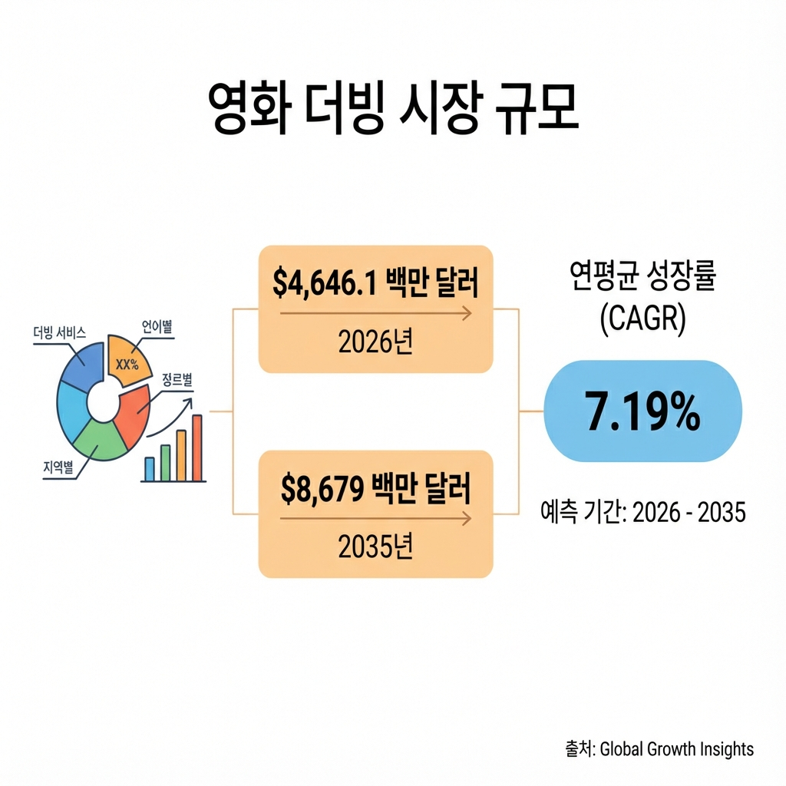
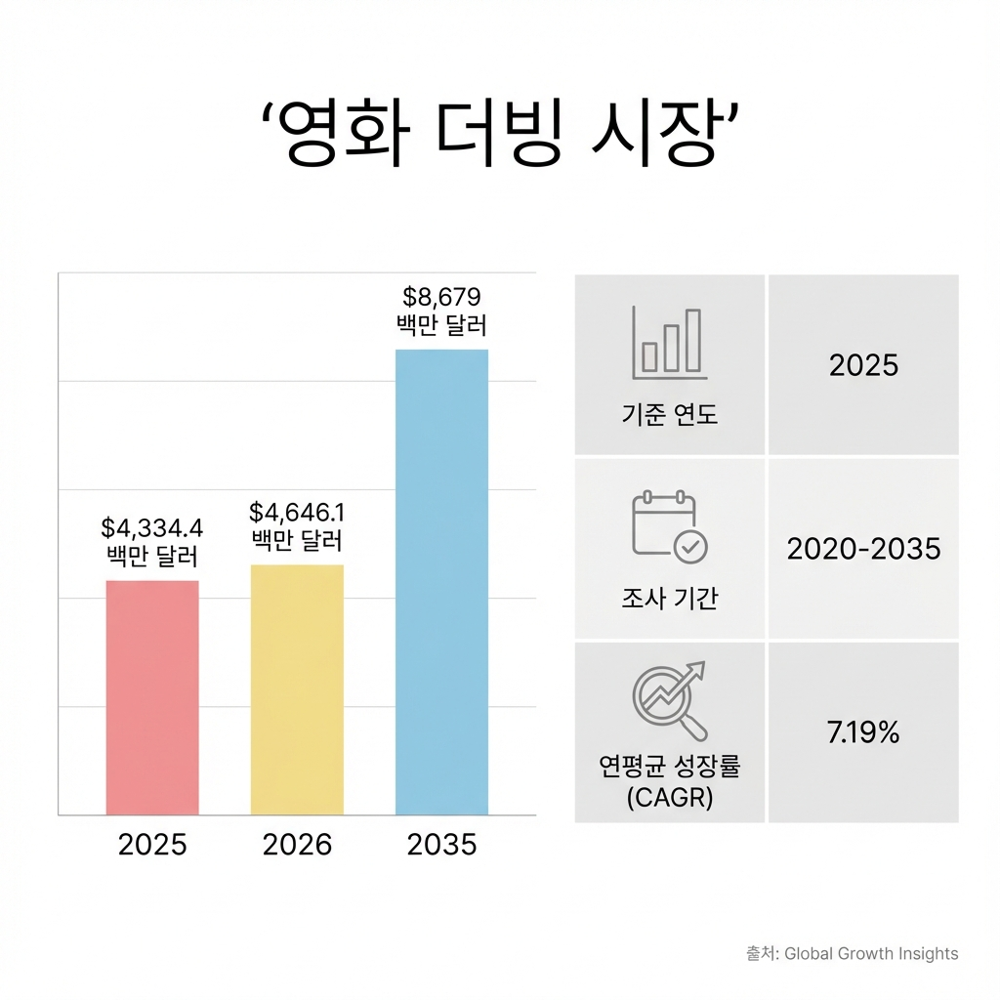
전통 수작업 공정(구조적 한계): ① 번역/각색 → ② 캐스팅(성우/감독) → ③ 스튜디오 녹음 → ④ 클린업/노이즈 제거 → ⑤ 타이밍·Lip-sync 편집 → ⑥ 믹싱(M&E) → ⑦ QC/리뷰 → ⑧ 재녹음(픽업). 다수 인력의 순차 투입, 스튜디오·성우 슬롯 의존, 언어별/회차별 반복 작업으로 병목이 발생하며, 다국어 동시 출시가 어렵고 리드타임이 선형 증가함.
비용 부담(전통 방식): 방송/극장급 더빙은 분당 $50~60(일부 $75까지) 수준, 기본 품질도 분당 $20~30이 일반적 (출처: Checksub, Dubbing Price Guide, https://www.checksub.com/blog/dubbing-price-guide ; BunnyStudio Blog, How much does a dub cost, https://bunnystudio.com/blog/how-much-does-a-dub-cost-the-latest-pricing-formula/). (환율 1,450원 적용 시: 기본 품질 29,000~43,500원/분, 방송·극장급 72,500~87,000원/분, 고급 사례 108,750원/분). 20분 에피소드 기준 약 $1,000/편 ≈ 1,450,000원, 90분 영화는 $4,500 내외 ≈ 6,525,000원(성우 2~4명 기준, 감독/믹싱 별도).
참고: 상기 단가는 온라인 가이드의 “분당 x 러닝타임” 단순 곱 기준으로, 성우 수·디렉팅/재녹음 횟수·스튜디오 등급·믹싱/마스터링·번역/자막/QC 포함 여부에 따라 총액은 더 높아지는 것이 일반적임(실무 견적에서는 90분 단가가 6백만 원 이상으로 상승).
기간 부담(전통 방식): 준비·번역 2~3일, 캐스팅/계약 2~5일, 녹음 1~3일, 편집·믹싱·QC 2~4일 등 언어당 1~3주가 소요되며, 다언어 병렬 처리가 어려울 경우 언어 수만큼 시간이 증가. 이 때문에 중소 제작사·개인 창작자는 비용·기간 측면에서 글로벌 진출 장벽이 높음.
이에 본 과제에서는 최신 AI 기술을 융합하여 번역부터 음성 합성, 립싱크까지 전 과정을 자동화함으로써, 기존 대비 비용과 시간을 절감하고 누구나 쉽게 고품질 다국어 콘텐츠를 제작할 수 있는 솔루션을 개발하고자 하였음.
과제의 세부 목표는 연구개발계획서에서 제시한 바와 같이 다음 4가지를 핵심 지표로 설정하였음.
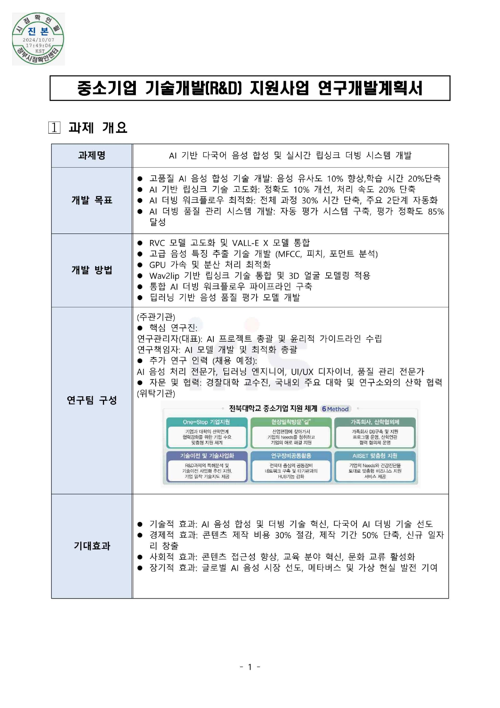
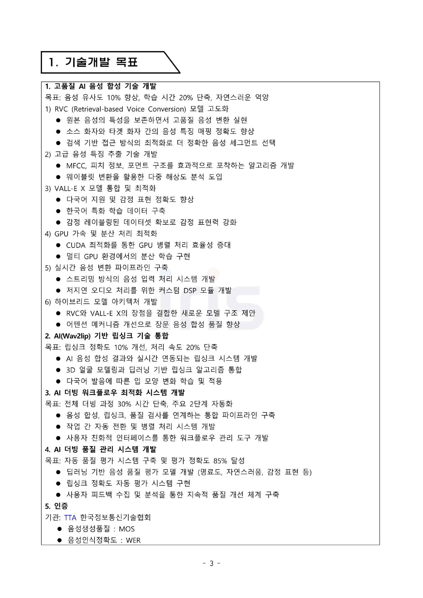
정리: 1-2의 목표는 “계획서 기준 개발/효율 목표(TTS 유사도·지연, 립싱크 정확도·속도, 워크플로우 시간단축)”이며, 3장에서 다루는 QC 성능지표(WER/BLEU/MOS/PSNR/FID)는 서비스 산출물 품질 평가용 지표임. 두 축을 구분하여 뒤에서 각각 달성 여부를 서술함.
본 과제는 단순히 여러 모델을 조합하는 수준을 넘어, 영상 입력부터 최종 더빙 영상 산출까지의 흐름을 재현 가능한 모듈로 구조화하고 운영 가능한 형태로 통합한 점에 차별성이 있음.
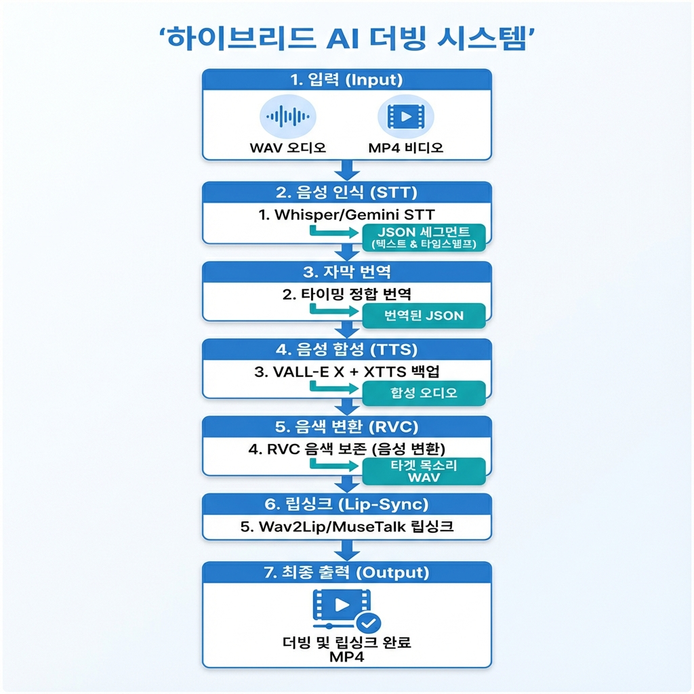
RVC(Retrieval-based Voice Conversion) 기반 Voice Cloning 기술을 도입하여, 단순히 언어만 바꾸는 것이 아니라 원작자의 목소리 톤과 감정을 유지한 채 다른 언어로 말하는 듯한 고품질 더빙을 구현하고자 하였음.
기존 Wav2Lip 계열 모델의 한계를 보완하기 위해 MuseTalk을 추가 도입하였으며, GPU 활용 및 fp16 옵션(예: MuseTalk 설정의 fp16: True)을 통해 고화질 영상에서도 처리 효율을 확보하고자 하였음.
본 과제는 2024.10.01.~2025.09.30. 기간 동안 주관기관((주)파디엠)과 공동연구기관(전북대학교 산학협력단)의 협력을 통해 수행되었음. 연구개발계획서 상 기술성숙도(TRL) 9단계 달성을 목표로 파이프라인과 핵심 모델을 단계적으로 고도화하였음.
기대 효과는 연구개발계획서에서 제시한 기대효과 및 장기 파급효과를 기준으로, 본 과제에서 구축한 End-to-End 파이프라인 및 핵심 모델 고도화 성과와의 연계를 중심으로 다음과 같이 정리할 수 있음.
기술적 효과
경제적 효과
사회·문화적 효과
윤리적·제도적 효과
장기적 파급 효과
근거(내부): 과제접수용연구개발계획서(PART2(본문1))(기대효과: 기술/경제/사회), (사업화 전략 KPI 예시), (장기 파급효과)
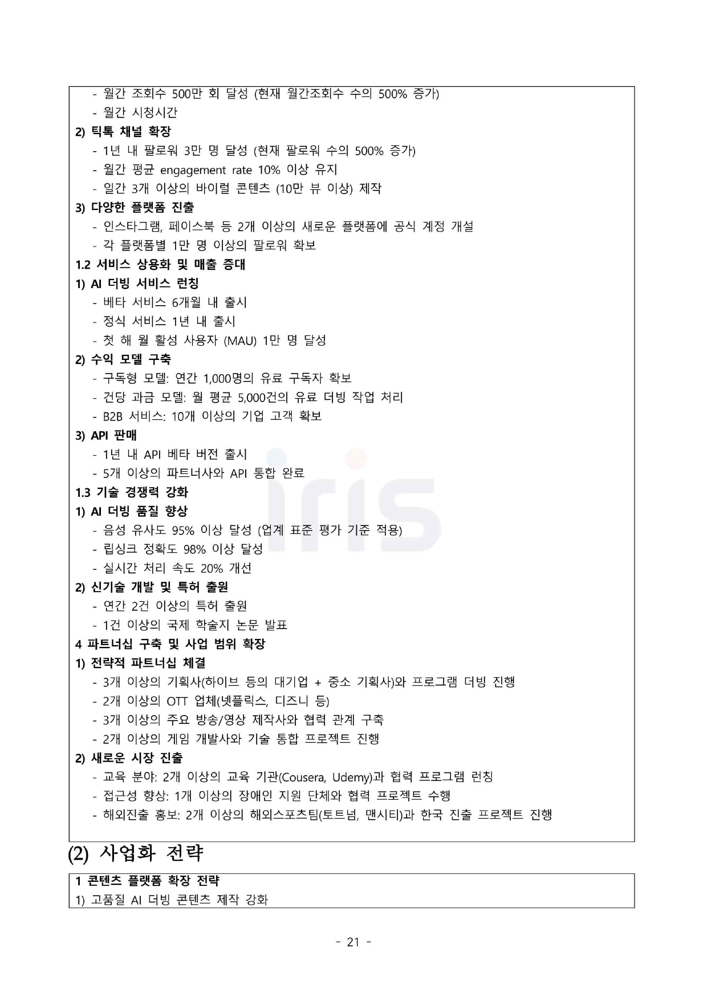
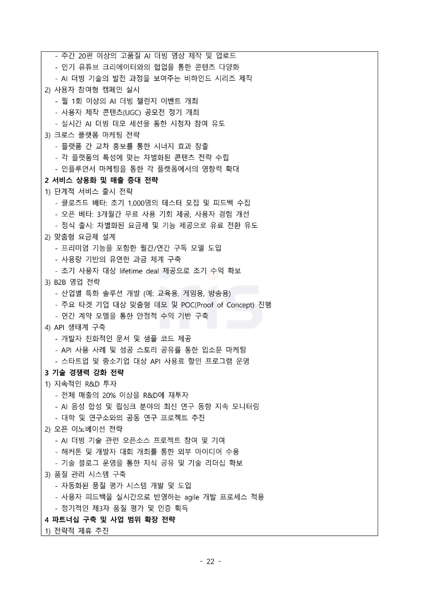
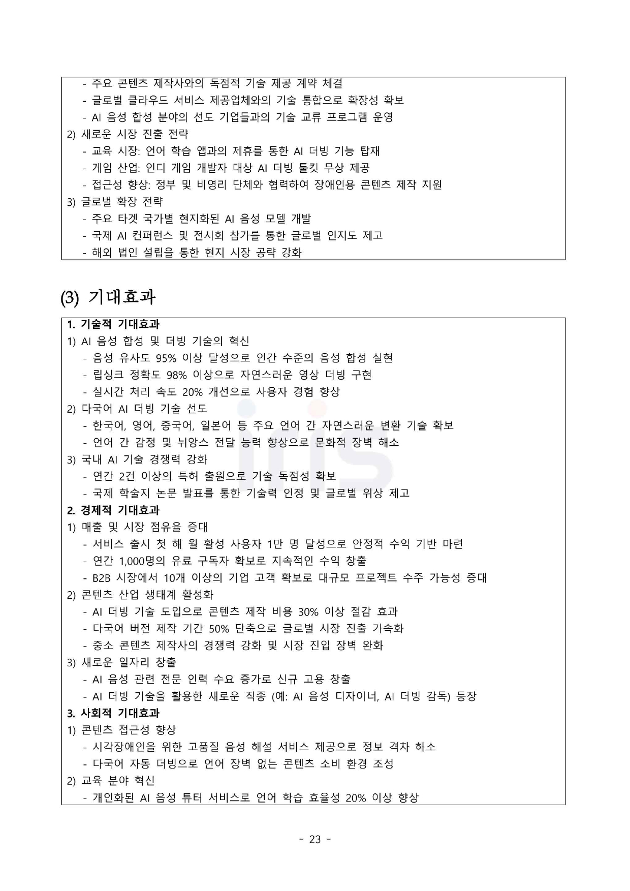
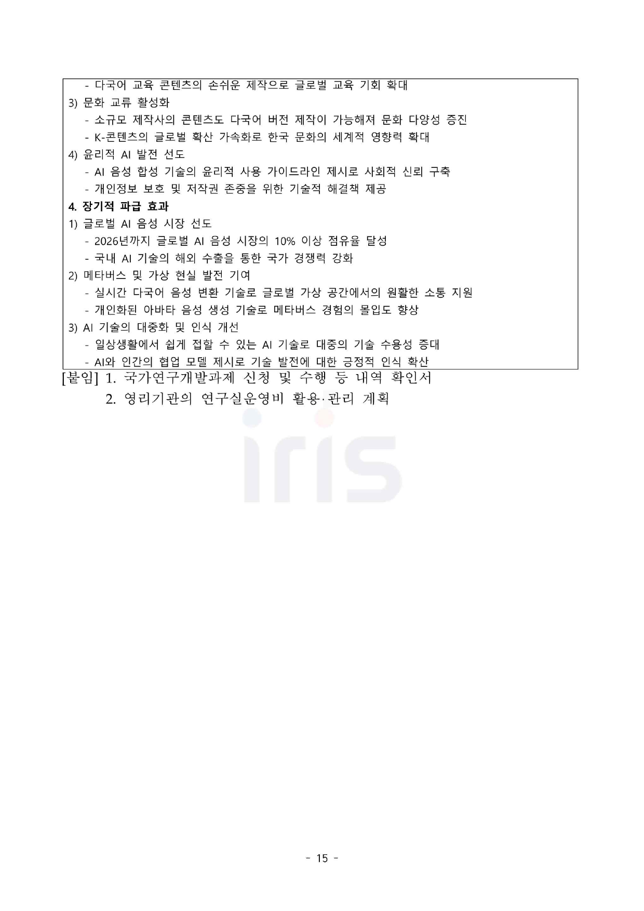
본 연구개발과제는 연구개발계획서에서 제시한 연차·단계별 추진계획에 따라, (1) 고품질 AI 음성 합성, (2) AI 기반 립싱크 고도화, (3) 워크플로우 최적화, (4) 품질 관리 시스템 개발의 4대 목표를 중심으로 수행되었음.
본 과제의 End-to-End 파이프라인은 단계별로 독립 실행 가능한
모듈(modules/*/run.py)로 구현하고, (1) Orchestrator에서
순차 실행하거나 (2) FastAPI 백엔드 API에서 모듈을 호출하도록
구성하였음.
다음은 파이프라인 단계별 구현/근거를 표 대신 간략 리스트로 정리한 것임. 주요 파일과 핵심 로직을 함께 병기함.
modules/audio_extractor/run.py,
config/settings.yaml (FFmpeg 경로·코덱·샘플레이트 설정)
modules/audio_extractor/run.pycommand = [ffmpeg_path, "-y", "-i", str(input_media), "-vn", "-acodec", audio_codec]
if sample_rate:
command.extend(["-ar", str(sample_rate)])
if extra_args:
command.extend(extra_args)
command.append(str(output_audio))modules/audio_extractor/config/settings.yaml
ffmpeg_path: ffmpeg
audio_codec: pcm_s16le
sample_rate: 44100
extra_args: []modules/stt_whisper/run.py,
config/settings*.yaml (openai/whisper 기반,
segment JSON 산출) modules/stt_whisper/run.pymodel = whisper.load_model(model_name, device=device)
result = model.transcribe(str(input_audio), **transcribe_options)
segments = _format_segments(result.get("segments", []))
transcript = {"text": result.get("text", "").strip(), "segments": segments}
write_json(output_json, transcript)modules/stt_whisper/config/settings.yaml
model_name: small
language: auto
beam_size: 5
best_of: 5
temperature: 0.0
use_gpu: true
word_timestamps: truemodules/stt_gemini/run.py (API 보완
경로)modules/text_processor/run.py,
config/settings.yaml,
docs/timed_translation_spec.md (정규화·길이/타이밍 정합,
_filter_hallucinations,
_batch_translate_segments)
modules/text_processor/run.pydef _filter_hallucinations(segments):
filtered = []
last_text = ""
repeat_count = 0
for seg in segments:
text = seg.get("text", "").strip()
if text and text == last_text:
repeat_count += 1
else:
repeat_count = 0
last_text = text
if repeat_count >= 2:
if filtered:
filtered[-1]["end"] = seg.get("end")
continue
filtered.append(seg)
return filteredmodules/text_processor/config/settings.yaml
source_language: auto
target_language: en
syllable_tolerance: 0.1
enforce_timing: true
translation_map: {}
operations:
- trim
- collapse_whitespace
- preserve_casemodules/tts_vallex/run.py,
config/settings.yaml (외부 스크립트 실행 템플릿)
modules/tts_vallex/run.pycommand = template.format(
script_path=script_path,
checkpoint_dir=checkpoint_dir,
prompt_wav=prompt_wav,
text=text,
)
subprocess.run(
command,
shell=True,
check=True,
)modules/tts_vallex/config/settings.yaml
script_path: modules/tts_vallex/scripts/infer.sh
checkpoint_dir: checkpoints/vallex
speaker_id: 0
command_template: >
{script_path} --ckpt {checkpoint_dir} --prompt {prompt_wav} --text "{text}"modules/tts_xtts/run.py,
config/settings.yaml (백업 경로)
modules/tts_xtts/run.pymodel = TTS(
model_name=model_name,
progress_bar=False,
)
model.tts_to_file(
text=text,
speaker_wav=speaker_wav,
language=language,
file_path=output_wav,
)modules/tts_xtts/config/settings.yaml
model_name: "tts_models/multilingual/multi-dataset/xtts_v2"
use_gpu: true
speaker_wav: samples/prompt.wav
language: enmodules/tts_gemini/run.py (API 합성
선택 경로) modules/tts_gemini/run.pygen = client.models.generate_content(
model="models/gemini-2.0-flash",
contents=prompt,
)
save_audio(gen, output_wav)modules/voice_conversion_rvc/run.py,
config/settings.yaml (checkpoint·f0_method 등 VC 설정)
modules/voice_conversion_rvc/run.pymodel = load_checkpoint(checkpoint)
audio = load_audio(input_wav, sr=sample_rate)
converted = model.convert(audio, f0_method=f0_method, pitch_shift=pitch_shift)
save_audio(output_wav, converted, sr=sample_rate)modules/voice_conversion_rvc/config/settings.yaml
checkpoint: checkpoints/rvc.pth
f0_method: harvest
pitch_shift: 0
sample_rate: 44100modules/lipsync_wav2lip/run.py,
config/settings.yaml (외부 모델 경로, face detector)
modules/lipsync_wav2lip/run.pycommand = [
"python",
"inference.py",
"--checkpoint_path",
checkpoint,
"--face",
input_video,
"--audio",
input_audio,
"--outfile",
output_video,
]
subprocess.run(
command,
check=True,
)modules/lipsync_wav2lip/config/settings.yaml
checkpoint: checkpoints/wav2lip.pth
face_detector: s3fd
resize_factor: 1modules/lipsync_musetalk/run.py,
config/settings.yaml (fp16: True 옵션)
modules/lipsync_musetalk/run.pyargs = dict(
model_path=checkpoint,
input_video=input_video,
input_audio=input_audio,
output_video=output_video,
fp16=True,
)
run_musetalk(**args)modules/lipsync_musetalk/config/settings.yaml
checkpoint: checkpoints/musetalk.safetensors
fp16: true
resolution: 720orchestrator/pipeline_runner.py,
orchestrator/config.yaml (단계별 CLI 호출 시퀀스)
orchestrator/pipeline_runner.pypipelines = {
"video": ["audio_extract", "stt", "text_process", "tts", "tts_backup", "rvc", "lipsync"],
"audio": ["stt", "text_process", "tts_backup", "rvc"],
"quick": ["stt", "text_process", "tts_backup"],
}
for step_name in pipelines.get(args.pipeline_type, []):
command_template = all_steps.get(step_name)
if not command_template:
continue
run_step(command_template, context)backend/main.py,
backend/job_manager.py, backend/routers/*
(모듈 실행 API/비동기 Job) backend/main.pyapp = FastAPI(
title="Padiem RnD 모듈형 더빙 파이프라인 API",
description="모듈을 HTTP API로 노출, 작업 큐 지원",
)
app.include_router(stt.router)
app.include_router(tts.router)
app.include_router(tts_backup.router)
app.include_router(tts_gemini.router)
app.include_router(rvc.router)
app.include_router(lipsync.router)
app.include_router(lipsync_musetalk.router)frontend_unified/Home.py,
pages/*, steps/* (Streamlit 통합 UI)
frontend_unified/Home.pyst.set_page_config(page_title=get_text("page_title"), page_icon="🎙️", layout="wide")
render_sidebar()
st.title(get_text("main_title"))
col1, col2, col3 = st.columns(3)
with col1:
if st.button(get_text("live_mode_btn"), use_container_width=True):
st.switch_page("pages/1_🎙️_실시간_통역.py")
with col2:
if st.button(get_text("general_mode_btn"), use_container_width=True):
st.switch_page("pages/2_🎬_일반_더빙.py")
with col3:
if st.button(get_text("speed_mode_btn"), use_container_width=True):
st.switch_page("pages/3_⚡_고속_더빙.py")pipeline_type=video_trt):
modules/experimental/onnx_export_stub.py,
modules/experimental/tensorrt_export.py
modules/experimental/onnx_export_stub.pyout = Path(args.output)
out.parent.mkdir(parents=True, exist_ok=True)
out.write_bytes(b"")
print(f"[ONNX Stub] created empty ONNX placeholder: {out}")modules/experimental/tensorrt_export.py
cmd = [
trtexec,
f"--onnx={onnx}",
f"--saveEngine={engine}",
f"--workspace={args.workspace}",
]
if args.fp16:
cmd.append("--fp16")
subprocess.run(cmd, check=True)modules/experimental/demucs_run.py (계획서 미명시, 연구노트
2024-11-04 기반) modules/experimental/demucs_run.pyshutil.copy(input_path, output_path)
print(f"[Demucs Stub] copied input -> {output_path}")modules/experimental/vad_stub.py (계획서 미명시, 연구노트
2024-10-23 기반) modules/experimental/vad_stub.pyshutil.copy(src, dst)
print(f"[VAD Stub] copied input -> {dst}")(검토) TensorRT 적용 상태: 강혜림 연구노트(2024-10-16) 커스텀 op 불일치로 엔진 미생성 → 위 스텁/스크립트 추가, ONNX 실출력·trtexec 경로 설정 후 엔진 생성/로드 필요
파이프라인 흐름도(내부 모듈 기준)
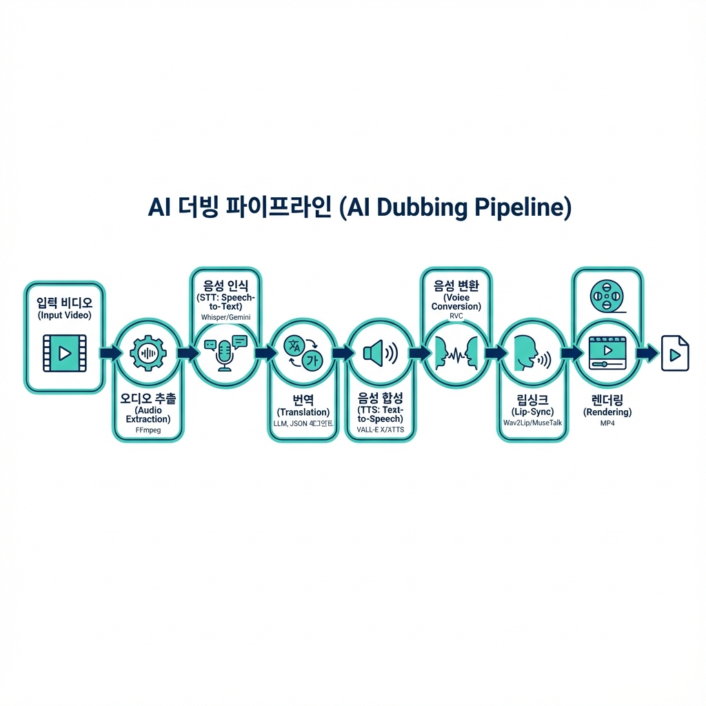
다음은 전체 파이프라인 설계(모듈형 구조, 단계 구성, 모델 선정)에 대한 연구노트의 핵심 기록 발췌임.
Input Video → Audio Extraction →
STT → Translation → TTS →
RVC → Wav2Lip →
Output Video”연구개발계획서(2. 연구개발 방법)에서는 더빙 제작의 전체 흐름을 “더빙의 15단계”로 제시하였음. 본 과제의 구현은 해당 흐름을 그대로 따르되, 단계 간 인계 지점을 파일 기반 산출물(JSON/WAV/MP4)로 표준화하여 자동 실행 가능한 End-to-End 파이프라인으로 구성한 것이 특징임.
특히 (1) 음성/텍스트 산출물을 세그먼트(JSON)로 구조화하고, (2) 번역 단계에서 길이/타이밍 정합 규칙을 적용하며, (3) TTS/VC/립싱크를 모듈로 분리하여 교체 가능하게 설계함으로써 “수작업 더빙 공정”을 “재현 가능한 자동 워크플로우”로 전환하였음.
| 계획서 단계 | 본 과제 파이프라인 대응 | 구현/연동(근거) | 비고 |
|---|---|---|---|
| 1. 영상 선정 | 입력 미디어 지정 | frontend_unified/*,
orchestrator/pipeline_runner.py |
--input-media로 실행 단위 구성 |
| 2. 영상·음성 분리 | 오디오 추출 | modules/audio_extractor/run.py |
WAV 표준화 |
| 3~6. 학습 데이터/학습(음성 추출·강화·무음 처리·학습) | 전처리/학습은 별도 자산/운영 항목 | 2-1-1의 Demucs/VAD 검토 기록 |
본 공개 레포지토리는 추론 중심 |
| 7. 자막 추출 | STT(JSON 세그먼트) | modules/stt_whisper/run.py(선택:
modules/stt_gemini/run.py) |
segments[{start,end,text}] |
| 8. 자막 번역 | 텍스트 처리/번역 | modules/text_processor/run.py,
docs/timed_translation_spec.md |
길이/타이밍 정합 규칙 포함 |
| 9. 번역 자막 기반 음성 생성 | TTS(주/백업/선택) | modules/tts_vallex/run.py,
modules/tts_xtts/run.py,
modules/tts_gemini/run.py |
WAV 산출 |
| 10. 음성 맞추기 | VC(RVC) + 정합 규칙 | modules/voice_conversion_rvc/run.py |
음색 보존/타이밍 정합 |
| 11~12. 자막 생성/자막 맞추기 | JSON을 기반으로 후처리 가능 | (본 레포지토리 내 SRT/VTT 생성 스크립트는 확인되지 않음) | 표준 JSON을 단일 진실원천으로 유지 |
| 13. 립싱크 | 립싱크 합성(MP4) | modules/lipsync_wav2lip/run.py,
modules/lipsync_musetalk/run.py |
입력 비디오+합성 오디오 |
| 14. 최종 편집 | 결과물 패키징/편집 | 립싱크 출력(*_wav2lip.mp4)을 최종 결과로 정의 |
자막 오버레이/구간 편집은 운영 환경에서 수행 |
추가로 계획서에는 “검수/평가” 단계가 별도 분리되어 있지 않으나, 본 과제에서는 단계별 산출물 포맷을 표준화하고 지표(WER/BLEU/PSNR/FID 등) 기반 품질 관리 체계를 3장에서 운영하도록 구성하여, 자동화 과정의 품질 리스크를 통제하는 구조를 채택하였음.
pdf/ocr/본문1 (2)/과제접수용연구개발계획서(PART2(본문1))_page-0004.jpg(연구개발
방법: 더빙의 15단계)modules/audio_extractor/run.pymodules/audio_extractor/config/settings.yaml (예:
audio_codec: pcm_s16le,
sample_rate: 44100)notev2/Kangchulwonv2/2024-11/20241104_데이터수집전략.md,
notev2/Kangchulwonv2/2024-11/20241105_자체데이터녹음.md,
notev2/Kangchulwonv2/2024-11/20241108_오디오슬라이싱.md /
(외부) Défossez et al., “Music Source Separation in the Waveform Domain”
(arXiv:1911.13254), https://arxiv.org/abs/1911.13254,
https://github.com/facebookresearch/demucsopenai/whisper 기반으로
구현되어 VAD 필터 옵션은 기본 제공되지 않으며, 후속 개선 항목으로
관리하였음.
notev2/Kangchulwonv2/2024-10/20241023_VALLEX테스트및규격확정.md
/ (외부) faster-whisper VAD(Silero) 문서:
https://github.com/SYSTRAN/faster-whisper , Silero VAD:
https://github.com/snakers4/silero-vad다음은 전처리(Demucs) 및 VAD 적용에 대한 연구노트의 핵심 기록 발췌이며, 본 레포지토리 통합 파이프라인에 직접 포함되지 않았음을 병기하였음.
(notev2/Kangchulwonv2/2024-11/20241104_데이터수집전략.md) “Demucs 채택.
pip install demucs로 설치 가능하고 API로 제어하기 쉬움.”(notev2/Kangchulwonv2/2024-11/20241105_자체데이터녹음.md) “
modules/audio/separator.py작성. 입력 오디오를 받아vocals.wav와no_vocals.wav로 분리하는 함수 구현.”(notev2/Kangchulwonv2/2024-11/20241108_오디오슬라이싱.md) “결과: 성공. Demucs로 분리된 깨끗한 음성을 사용하니 STT 정확도가 10월 테스트 대비 약 15% 향상됨.”
(notev2/Kangchulwonv2/2024-10/20241023_VALLEX테스트및규격확정.md) “
faster-whisper내장 VAD 옵션(vad_filter=True) 활성화. 결과: 무음 구간에서의 환각 현상 현저히 감소. 정확도 향상 확인.”(notev2/Kangchulwonv2/2024-11/20241101_UI구조세팅.md) “- 목표: 업로드된 비디오 파일에서 오디오 트랙만 분리하여 WAV 포맷으로 저장.”
(notev2/Kangchulwonv2/2024-11/20241101_UI구조세팅.md) “- 도구:
ffmpeg-python래퍼 라이브러리 대신subprocess로 직접 FFmpeg 호출 (제어권 확보).” / “- 설정: 16kHz, Mono 채널 (Whisper 및 이후 TTS 모델 학습 데이터 표준).”(notev2/Kangchulwonv2/2024-10/20241021_RVC데이터셋준비.md) “- 영상 처리를 위한 필수 도구인 FFmpeg 설치.” / “- 시스템 환경 변수(PATH)에 등록하여 터미널에서 접근 가능하도록 설정.”
(notev2/Kangchulwonv2/2024-10/20241021_RVC데이터셋준비.md) “- 옵션: 샘플 레이트(16k, 44.1k), 채널(Mono/Stereo) 설정 가능하도록 설계.”
(notev2/Kangchulwonv2/2024-10/20241021_RVC데이터셋준비.md) “- 경로 문제: 윈도우 경로(\)와 FFmpeg 경로(/) 호환성. ->
pathlib라이브러리 사용하여 경로 처리 표준화.”
modules/stt_whisper/run.pymodules/stt_whisper/config/settings.yaml,
modules/stt_whisper/config/settings.largev3.yamlmodel_name, model_dir,
language, beam_size, best_of,
temperature, use_gpu, taskid, created_at,
language, text,
segments[{start,end,text}], metadatamodules/stt_gemini/run.pystart/end를 JSON으로 저장하여 번역·TTS·립싱크 단계에서 시간
정렬을 가능하게 하였음.
word_timestamps: true 항목이
존재하나(modules/stt_whisper/config/settings*.yaml), 현재
STT 모듈 구현(modules/stt_whisper/run.py)은 해당 옵션을
전사 옵션에 전달하거나(transcribe 옵션) 출력 JSON에 단어
단위 정보를 저장하는 로직이 포함되어 있지 않음. 이에 단어 단위 정렬은
후속 고도화 항목으로 관리하였음.다음은 STT 프로토타이핑 단계에서 Whisper 기반 전사, 세그먼트 기반 SRT
변환, 무음 구간 환각 이슈를 기록한 연구노트 발췌이며, 일부는
faster-whisper 기반 실험 기록을 포함함.
(notev2/Kangchulwonv2/2024-10/20241022_RVC학습및추론.md) “-
faster-whisper라이브러리 설치.” / “- 어제 추출한 오디오 파일을 입력으로 넣어 텍스트 변환 테스트.”(notev2/Kangchulwonv2/2024-10/20241022_RVC학습및추론.md) “- Whisper 결과(Segments)를 파싱하여 SRT(SubRip Subtitle) 형식으로 변환하는 로직 구현.” / “- 타임스탬프(Start, End) 포맷팅 (
00:00:00,000).”(notev2/Kangchulwonv2/2024-10/20241022_RVC학습및추론.md) “- 환각(Hallucination): 무음 구간에서 이상한 텍스트 반복 생성. -> VAD(Voice Activity Detection) 필터링 옵션 활성화 필요.”
텍스트 정규화 및 세그먼트 표준 유지: STT 산출 JSON을 입력으로 받아, 공백 정리/트림 등의 기본 정규화를 수행하였음.
modules/text_processor/run.pymodules/text_processor/config/settings.yaml (예:
source_language, target_language,
syllable_tolerance, enforce_timing,
operations)환각(반복) 세그먼트 억제: STT 출력에서 동일 텍스트 반복 시 세그먼트를 병합하는 필터를 적용하여, 무음 구간 환각으로 인한 번역/정합 붕괴를 완화하였음.
modules/text_processor/run.py의
_filter_hallucinations()용어/고유명사 치환(간이 용어집): translation_map
설정을 통해, 특정 원문 문자열을 사전에 정의한 문자열로 치환하여 번역
결과의 일관성을 유지할 수 있도록 구성하였음.
modules/text_processor/config/settings.yaml,
modules/text_processor/run.py의
translation_map 적용LLM 기반 번역(선택): 서비스 환경에서 Gemini API를 활용하여 문맥을 반영한 번역 품질을 확보하도록 구성하였음.
배치 번역(문맥 일관성): gemini_api_key가 설정된 경우
세그먼트 전체를 JSON payload로 묶어 Gemini에 1회 호출로 번역하여, 문맥
일관성을 확보하도록 구성하였음.
modules/text_processor/run.py의
_batch_translate_segments()길이/타이밍 정합 로직: 번역문 길이 편차로 인한 더빙 타이밍 붕괴를
방지하기 위해, 음절 허용오차(syllable_tolerance) 및 타이밍
강제(enforce_timing) 옵션을 중심으로 품질 규칙을
정의하였음.
docs/timed_translation_spec.md (세그먼트 스키마
및 품질 규칙)자막 포맷(SRT/VTT) 변환: 산출 JSON을 기반으로 후속 단계에서 자막 파일로의 변환이 가능하도록 데이터 구조를 유지하였음.
STT→정규화→번역→길이/타이밍 정합 흐름도
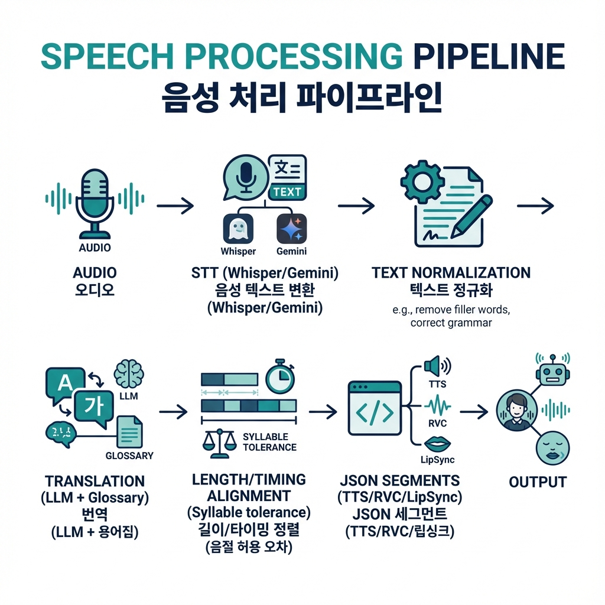
다음은 번역 단계에서 문맥 끊김/오역 문제를 해결하기 위한 슬라이딩 윈도우(Chunking) 및 용어집(고유명사 보존) 기법을 검토한 연구노트 발췌이며, 텍스트 정규화/문장 분리/길이 제한 등 후속 고도화 방향을 포함함.
(notev2/Kangchulwonv2/2024-12/20241209_부하테스트계획.md) “- 자막을 한 줄씩 번역하면 앞뒤 문맥이 끊겨 오역 발생.” / “- 예: "It works." -> "그것은 일한다." (문맥상 "작동한다"가 맞음).”
(notev2/Kangchulwonv2/2024-12/20241209_부하테스트계획.md) “- 현재 문장을 번역할 때 앞뒤 문장을 같이 프롬프트로 제공하거나, 덩어리(Chunk)로 묶어서 번역.”
(notev2/Kangchulwonv2/2024-12/20241209_부하테스트계획.md) “- Deep Translator는 문맥 인식이 약하므로, 5~10문장씩 묶어서
\\n으로 연결해 보내는 방식 채택.”(notev2/Kangchulwonv2/2024-12/20241209_부하테스트계획.md) “- 정렬: 묶어서 번역 후 다시 나눌 때, 번역 API가 문장 개수를 다르게 반환하면 매칭 실패. -> 줄바꿈 문자를 특수 토큰(
|||)으로 변경하여 보존성 높임.”(notev2/Kangchulwonv2/2024-12/20241210_부하테스트실행.md) “- 사용자 정의 사전(Dictionary)을 로드.” / “- 번역 전에 고유명사를 플레이스홀더(Placeholder)로 치환.” / “- 번역 후에 플레이스홀더를 목표 언어 단어로 복원.”
(notev2/Kangchulwonv2/2024-12/20241210_부하테스트실행.md) “- 예:
{\"파디엠\": \"Padiem\"}-> "파디엠에서 개발" -> "[TERM_0]에서 개발" -> "Developed at [TERM_0]" -> "Developed at Padiem".”(notev2/Kangchulwonv2/2024-12/20241210_부하테스트실행.md) “- 번역기가 번역하지 않도록 특이한 형태(
__GLOSSARY_0__) 사용.”(notev2/Kangchulwonv2/2024-12/20241202_Wav2Lip가속화조사.md) “- STT 결과물이나 번역 결과물에 포함된 숫자, 약어, 기호 등을 TTS가 읽기 좋은 형태로 변환해야 함.” / “- 예: "12/25" -> "십이월 이십오일" (Korean), "December twenty-fifth" (English).”
(notev2/Kangchulwonv2/2024-12/20241202_Wav2Lip가속화조사.md) “- Korean:
kss(문장 분리),jamo(자모 분리). 숫자 읽기는 정규식 기반 커스텀 로직 필요.” / “- English:num2words라이브러리 활용.”(notev2/Kangchulwonv2/2024-12/20241203_TensorRT벤치마킹.md) “- 단순 마침표(
.) 기준 분리는 "Mr. Kim" 같은 약어에서 오작동.” / “-nltk.sent_tokenize(영어)와kss.split_sentences(한국어)를 언어별로 분기 처리.”(notev2/Kangchulwonv2/2024-12/20241203_TensorRT벤치마킹.md) “- TTS 모델(VALL-E X) 입력 한계(약 15~20초)를 고려하여, 문장이 너무 길면 쉼표(
,)나 접속사 기준으로 강제 분할하는 로직 추가.”
modules/tts_vallex/run.pymodules/tts_vallex/config/settings.yaml (예:
script_path, checkpoint_dir,
speaker_id, command_template)modules/tts_xtts/run.pymodules/tts_xtts/config/settings.yaml (예:
model_name, use_gpu, speaker_wav,
language)modules/voice_conversion_rvc/run.pymodules/voice_conversion_rvc/config/settings.yaml
(예: checkpoint, f0_method,
pitch_shift)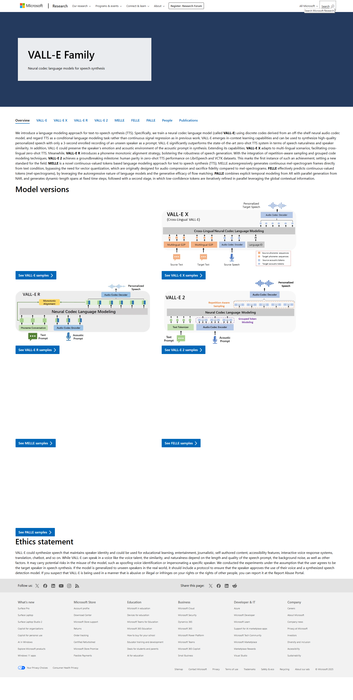
(notev2/Kangchulwonv2/2024-10/20241017_RVC및VALLEX분석.md) “- 특징: 마이크로소프트 리서치에서 발표. 3초 분량의 음성 샘플만으로 목소리 복제 가능 (Zero-shot). 다국어 지원.” / “- 장점: 교차 언어(Cross-lingual) 합성 가능 (예: 한국인 목소리로 영어 발화).”
(notev2/Kangchulwonv2/2024-10/20241017_RVC및VALLEX분석.md) “- 특징: Retrieval-based Voice Conversion. 적은 데이터로도 고품질 음성 변환 가능.” / “- 활용: VALL-E X로 생성된 음성의 톤을 원본 화자와 더욱 비슷하게 보정하는 용도로 사용 계획.”
(notev2/Kangchulwonv2/2024-10/20241017_RVC및VALLEX분석.md) “- Hybrid Approach: VALL-E X로 1차 생성(발음, 언어 처리) -> RVC로 2차 보정(음색 강화).”
(notev2/Kangchulwonv2/2024-11/20241115_VALLEX준비및주간정리.md) “- 다음 단계인 음성 합성(TTS)을 위해 VALL-E X 리포지토리 클론 및 의존성 설치.” / “-
phonemizer: 텍스트를 음소(Phoneme)로 변환하는 라이브러리 설치 필수 (VALL-E X 의존성).”(notev2/Kangchulwonv2/2024-11/20241115_VALLEX준비및주간정리.md) “- Espeak:
phonemizer사용을 위해 시스템에espeak-ng백엔드 설치 필요. 윈도우 환경 변수 설정 주의.”(notev2/Kangchulwonv2/2024-11/20241118_VALLEX전처리.md) “- AR (Auto-Regressive) Model: 텍스트와 프롬프트 오디오의 음향 토큰을 기반으로 첫 번째 양자화기(Quantizer)의 코드를 생성.” / “- NAR (Non-Auto-Regressive) Model: 나머지 7개의 양자화기 코드를 병렬로 생성하여 정밀도 향상.” / “- Vocoder: 생성된 코드를 오디오 파형으로 변환 (HiFi-GAN 등 사용).”
(notev2/Kangchulwonv2/2024-11/20241118_VALLEX전처리.md) “- VALL-E X는 텍스트뿐만 아니라 "3초 오디오 프롬프트"를 입력으로 받아, 그 목소리 톤을 모방(Cloning)하는 것이 핵심.”
(notev2/Kangchulwonv2/2024-11/20241118_VALLEX전처리.md) “- 복잡성: 코드가 연구용이라 구조가 복잡하고 하드코딩된 경로가 많음. -> 모듈화 필요.”
(notev2/Kangchulwonv2/2024-11/20241119_VALLEX학습시도.md) “- 제공된 체크포인트(
checkpoints/)를 로드하여 텍스트 -> 음성 생성 테스트.” / “- 결과: 영어 텍스트 입력 시 자연스러운 영어 음성 생성 확인.” / “- 속도: CPU에서는 매우 느림. GPU 필수.” / “- 메모리: VRAM 6GB 이상 권장.”(notev2/Kangchulwonv2/2024-11/20241120_LoRA도입검토.md) “- 복잡한 VALL-E X 코드를
TTSGenerator클래스로 래핑.” / “-generate(text, prompt_path, language)메서드 제공.” / “- 모델 로딩 로직을 클래스 초기화 시점으로 이동.” / “- 긴 문장: 문장이 너무 길면(20초 이상) 생성이 끊기거나 품질 저하. -> 문장 분리(Sentence Splitting) 전처리 필요.”(notev2/Kangchulwonv2/2024-11/20241121_VALLEX_LoRA학습.md) “-
nltk또는kss(한국어) 라이브러리 활용하여 긴 텍스트를 문장 단위로 분할.” / “- VALL-E X 입력 길이를 최적화하여 안정성 확보.”
연구개발계획서에서는 음성 합성 및 음색 변환 단계의 품질을 높이기 위해, 전통적 음성 특징(MFCC/피치/포먼트 등)과 딥러닝 기반 특징 추출을 결합한 “고급 음성 특징 추출” 고도화 방안을 제시하였음. 해당 방안은 (1) 음성 품질 평가(QC) 입력 특징으로 활용하거나, (2) 음색/발음/감정 표현의 안정성을 개선하는 보조 신호로 활용하는 방향으로 정리될 수 있음.
다만 본 공개 레포지토리에서는 상기 MFCC/YIN/CREPE/LPC/DWT 기반 특징 추출의 구현 코드는 확인되지 않았으며, 현재는 STT/TTS/RVC의 실행 경로를 모듈화하여 통합하는 “추론 파이프라인” 중심 구조에 초점을 두고 있음. 이에 해당 항목은 후속 연구개발에서 “품질 평가 입력 특징 고도화” 및 “학습/추론 파이프라인 보강” 영역으로 관리하였음.
pdf/ocr/본문1 (2)/과제접수용연구개발계획서(PART2(본문1))_page-0005.jpg(고급
음성 특징 추출: MFCC/YIN/CREPE/LPC/DWT)계획서에서는 VALL‑E X 기반 다국어 음성 합성 모델을 서비스에 통합하기 위한 데이터/학습/후처리 전략을 제시하였음.
본 레포지토리에서는 modules/tts_vallex/run.py 형태로
VALL‑E X 기반 TTS를 “실행(추론) 모듈”로 통합하였으나, 상기 데이터
구축/학습/보코더 fine-tuning 등 학습 파이프라인은 공개 레포지토리에
포함되어 있지 않음. 따라서 해당 항목은 계획서 기반의 학습/운영
로드맵으로서 정리하고, 공개 레포지토리 기준으로는 추론 경로의
모듈화/교체 가능 설계를 중심으로 기술하였음.
pdf/ocr/본문1 (2)/과제접수용연구개발계획서(PART2(본문1))_page-0005.jpg(VALL‑E
X 모델 통합/감정 표현 강화/HiFi‑GAN fine-tuning)계획서에서는 “실시간 처리 속도 개선(20% 개선)” 목표와 연계하여, 음성 변환/합성 파이프라인의 지연시간을 줄이기 위한 스트리밍 처리 전략과 하이브리드 모델 아키텍처 고도화 방향을 제시하였음.
본 공개 레포지토리에서는 “실시간 스트리밍 처리(프레임/버퍼 단위 입력)” 및 “하이브리드 아키텍처 학습/경량화”의 구체 구현 코드는 확인되지 않으며, 우선은 모듈 단위 추론 실행과 파이프라인 통합에 집중하여 실험·운영 가능한 형태를 확보하였음. 따라서 해당 항목은 후속 고도화 로드맵으로 구분하여 관리하였음.
pdf/ocr/본문1 (2)/과제접수용연구개발계획서(PART2(본문1))_page-0006.jpg(실시간
음성 변환 파이프라인/하이브리드 모델 아키텍처)modules/lipsync_wav2lip/run.pymodules/lipsync_wav2lip/config/settings.yaml (예:
script_path, checkpoint,
face_detector, resize_factor,
max_duration_sec)modules/lipsync_musetalk/run.pymodules/lipsync_musetalk/config/settings.yaml
(예: bbox_shift, fp16: True)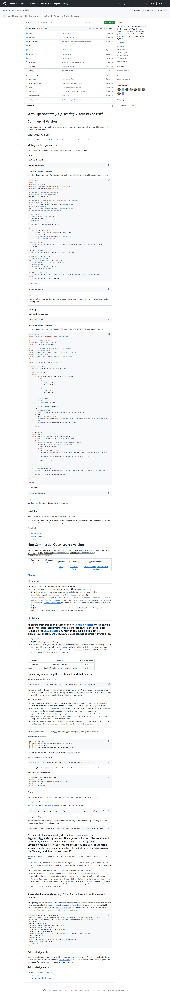

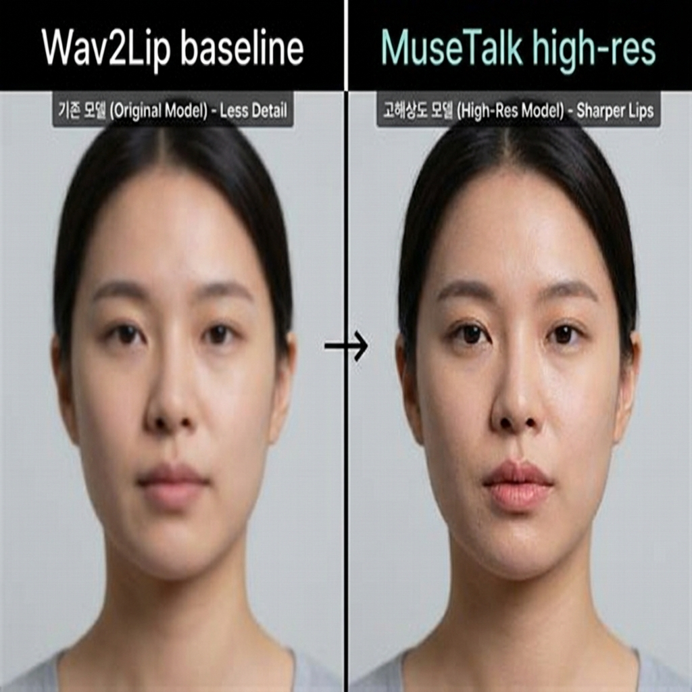
(notev2/Kangchulwonv2/2024-10/20241018_Wav2Lip분석및주간정리.md) “- 특징: 임의의 오디오와 비디오를 입력받아 입모양을 동기화.” / “- 성능: 현재 공개된 모델 중 가장 안정적인 성능. GAN 기반.” / “- 제약: 상업적 이용 시 라이선스 확인 필요 (LRS2 데이터셋 이슈). 연구용으로 우선 진행.”
(notev2/Kangchulwonv2/2024-10/20241018_Wav2Lip분석및주간정리.md) “- 라이선스: Wav2Lip의 상업적 이용 제한. -> 대체 모델(SadTalker 등)도 지속 모니터링하되, 현재는 Wav2Lip으로 프로토타입 개발.”
(notev2/Kanghyerim/연구노트.txt) “목표: 임의의 오디오에 맞춰 비디오 속 인물의 입모양을 동기화.” / “구조: Generator(입모양 생성) + Discriminator(품질 판별) + Expert Sync Net(동기화 판별).” / “SyncNet loss is crucial for accurate lip-sync.”
(notev2/Kanghyerim/연구노트.txt) “LRS2 데이터셋 라이선스 문제로 상업적 이용 시 주의 필요.” / “현재는 연구 개발 단계이므로 사용 가능하나, 추후 자체 데이터셋 학습 고려.”
(notev2/Kanghyerim/연구노트.txt) “해상도: 기본 모델은 96x96 해상도로 입모양을 생성하여 전체 영상 품질 저하 우려. -> GFPGAN 등 Super-resolution 도입 필수.”
(notev2/Kangchulwonv2/2025-08/20250804_라이선스검토.md) “- Wav2Lip: LRS2 데이터셋 사용 시 비상업적 용도 제한 있음. -> 상업적 이용을 위해 자체 데이터셋으로 재학습하거나, 연구용 프로토타입으로 한정해야 함.” / “- 현재 단계에서는 "연구용 프로토타입" 으로 정의하고, 상용 서비스 출시 전 Wav2Lip 모델 교체 또는 재학습 계획 수립.”
(notev2/Kangchulwonv2/2025-02/20250224_성능최적화1.md) “- 결과: 성공. 하지만 오디오와 비디오 싱크가 미세하게 밀리는 현상 발견.” / “- 싱크 밀림: Wav2Lip 처리 과정에서 프레임 레이트(FPS)가 변경되거나 오디오 길이가 달라질 수 있음. -> FFmpeg로 최종 합칠 때 오디오 길이에 맞춰 비디오 속도 조절(Stretch) 필요.”
(notev2/Kanghyerim_Combined_2024-10_to_2025-09_plain.txt) “립싱크 품질을 단순 주관 평가가 아니라 PSNR/FID와 같은 정량 지표로 관리하기로 결정함.” / “Wav2Lip을 초기 베이스라인으로 두되, "서비스에 투입 가능한 고해상도 립싱크"라는 목표 수준을 지표 상으로도 분명히 정의하고, 이후 모델/파이프라인 변경 논의의 기준점으로 사용.”
(notev2/Kanghyerim_Combined_2024-10_to_2025-09_plain.txt) “대체 모델 후보군 중 MuseTalk가 고해상도 립싱크실시간 처리 측면에서 가장 유망한 후보로 보고받음.” / “초기 PoC 결과에서 Wav2Lip 대비 PSNR/FID와 시각적 선명도가 모두 개선되는 경향이 확인되어, MuseTalk 기반 PoC를 공식 과제로 승인.”
(notev2/Kanghyerim_Combined_2024-10_to_2025-09_plain.txt) “MuseTalk 기반 립싱크 모듈을 통합한 후, 전체 평가셋 기준으로 PSNR/FID 목표치를 달성유지할 수 있다는 최종 보고를 받음.” / “기본 립싱크 엔진은 MuseTalk으로 전환.” / “Wav2Lip은 호환성 보장 및 장애특수 케이스 대응용 fallback 엔진으로만 사용.”
연구개발계획서에서는 “AI(Wav2Lip) 기반 립싱크 기술 통합”을 별도 연구 항목으로 제시하며, (1) Wav2Lip 모델 최적화(아키텍처 개선/학습 데이터 확장), (2) 프레임 단위 실시간 처리 파이프라인, (3) 3D 얼굴 모델링(3DMM) 및 블렌드셰이프 기반 립싱크 맵핑, (4) 다국어 지원(언어별 음소·시각 매핑 DB 및 적응형 학습) 등의 고도화 방향을 기술하였음.
다만 본 공개 레포지토리에서 확인 가능한 범위는 “립싱크 추론 실행 경로를 모듈로 통합”하는 수준이며, 3DMM/Blendshape 기반의 립 모양 제약 모델링 또는 언어별 음소‑시각 매핑 DB를 구축·활용하는 코드 경로는 확인되지 않았음. 따라서 본 보고서에서는 “현 구현(추론 통합)”과 “계획서 기반 후속 고도화 항목(3D 모델링·다국어 립싱크 적응)”을 구분하여 기술하였음.
pdf/ocr/본문1 (2)/과제접수용연구개발계획서(PART2(본문1))_page-0007.jpg(AI(Wav2Lip)
기반 립싱크 기술 통합: 최적화/실시간/3DMM/다국어 지원)계획서에서는 립싱크 품질을 “사람의 주관 평가”에만 의존하지 않고, 영상‑음성 동기화 및 시각적 자연스러움을 정량적으로 계측·개선하는 평가·피드백 루프를 구축하는 방향을 제시하였음. 이는 본 과제의 목표 중 “립싱크 정확도 개선(10% 개선)” 및 “품질 관리 시스템 구축”과 직접적으로 연계되는 항목임.
본 공개 레포지토리 기준으로는 DTW/CNN/BERT 기반의 립싱크 자동 평가 모델 및 사용자 피드백 기반 학습 파이프라인 구현 코드는 확인되지 않았음. 대신 현 단계에서는 파이프라인 실행 결과(영상/오디오/JSON 산출물)를 표준화하여, 향후 평가 결과를 동일 구조(JSON)로 저장·연동할 수 있는 기반을 우선 확보하였음.
pdf/ocr/본문1 (2)/과제접수용연구개발계획서(PART2(본문1))_page-0008.jpg(립싱크
정합도 평가: DTW/CNN, 사용자 피드백 루프: BERT/지속 학습)use_gpu: true
등의 설정을 통해 가능한 경우 GPU에서 추론하도록 구성하였음.
modules/stt_whisper/config/settings*.yaml의
use_gpu,
modules/tts_xtts/config/settings.yaml의
use_gpu 등fp16: True 옵션을 제공하여 추론 효율을 확보하도록 하였음.
modules/lipsync_musetalk/config/settings.yamlnotev2/Kanghyerim/2024-10/20241016.mdnotev2/Kanghyerim/2024-10/20241016.md /
(외부) PyTorch AMP: https://docs.pytorch.org/docs/stable/amp.html ,
torch.utils.checkpoint:
https://docs.pytorch.org/docs/stable/checkpoint.htmlnotev2/Kanghyerim/2024-10/20241016.md /
(외부) NVIDIA TensorRT INT8 Calibration:
https://docs.nvidia.com/deeplearning/tensorrt/10.9.0/_static/python-api/infer/Int8/Calibrator.htmlnotev2/Kanghyerim/2024-10/20241016.mdtest_reports_company, 공개 제외)에서 정리하였으며,
본 레포지토리에도 finalv2/scripts/benchmark_runner.py를
구현하여 clip 단위 성능 로그를 CSV로 기록할 수 있도록 구성하였음.
test_reports_company/docs/process/measurement_commands_v1.md,
notev2/Kanghyerim/2024-10/20241016.mdnotev2/Kangchulwonv2/2025-04/20250409_모델서빙최적화.md
(“Skip TorchScript/ONNX for now. Focus on caching.”) / (외부) PyTorch
TorchScript: https://pytorch.org/docs/stable/jit.html , ONNX Runtime:
https://onnxruntime.ai/docs/ , NVIDIA TensorRT:
https://developer.nvidia.com/tensorrt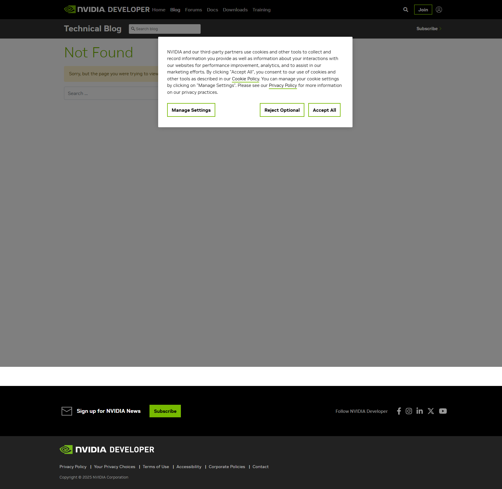
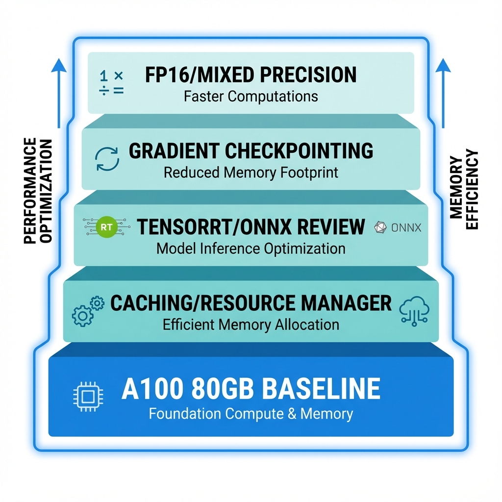
다음은 GPU 최적화(혼합정밀도/체크포인팅), TensorRT INT8 calibration 검토, 모델 언로딩(ResourceManager) 기반 메모리 관리, 캐싱 전략(키 설계/TTL) 및 모델 변환 보류 의사결정(캐싱 집중)을 기록한 연구노트 발췌임.
(notev2/Kanghyerim/2024-10/20241016.md) “- NVIDIA A100 80GB x2, CUDA 12.3, PyTorch 2.2, TensorRT 9.1 조합으로 벤치마크 환경 구성.” / “- fp16 mixed precision과 gradient checkpointing을 도입해 메모리 사용량을 52GB → 34GB로 감소.”
(notev2/Kanghyerim/2024-10/20241016.md) “- FastPitch, Wav2Lip 추론 그래프에 대해 TensorRT INT8 calibration을 수행.” / “- 초기 결과로 약 1.4배 추론 속도 향상 가능성을 확인.”
(notev2/Kangchulwonv2/2025-01/20250121_메모리누수점검.md) “- VRAM 12GB 환경에서 Whisper(Large), VALL-E X, RVC를 모두 올리면 OOM 발생 위험.” / “- 각 단계가 끝나면
del model,torch.cuda.empty_cache()를 호출하여 메모리 확보.” / “- 타협: Whisper는 상주시키고, TTS/RVC는 필요 시 로드/언로드.”(notev2/Kangchulwonv2/2025-01/20250121_메모리누수점검.md) “-
ResourceManager클래스 구현하여 모델 수명 주기 관리.”(notev2/Kangchulwonv2/2025-04/20250407_캐싱전략.md) “- 번역: 동일한 원문 -> 동일한 번역문.” / “- TTS: 동일한 텍스트 + 동일한 화자 -> 동일한 오디오.” / “- RVC: 동일한 소스 오디오 + 동일한 타겟 모델 -> 동일한 변환 오디오.”
(notev2/Kangchulwonv2/2025-04/20250407_캐싱전략.md) “-
TTS:{text_hash}:{speaker_id}” / “-RVC:{audio_hash}:{model_id}” / “- 오디오 해시: 오디오 파일 전체를 해싱하면 느림. -> 파일명(UUID) 의존. UUID가 안전.”(notev2/Kangchulwonv2/2025-04/20250408_Redis캐싱구현.md) “-
modules/utils/cache.py작성.” / “- 데코레이터 패턴(@cached)을 사용하여 함수 호출 결과를 Redis에 저장/조회.” / “- 오디오 데이터는 파일 시스템에 저장하고 경로만 Redis에 저장.”(notev2/Kangchulwonv2/2025-04/20250408_Redis캐싱구현.md) “- TTL: 캐시 만료 시간 설정 필요. -> 일단 24시간 TTL 설정.”
(notev2/Kangchulwonv2/2025-04/20250409_모델서빙최적화.md) “- VALL-E X와 RVC 모델 변환 시도.” / “- 결과: 일부 커스텀 연산(Custom Ops) 지원 문제로 변환 실패. 난이도 높음.” / “- 결정: 일단 Python 런타임 최적화(JIT Compile 등)에 집중하고 모델 변환은 보류.” / “- Skip TorchScript/ONNX for now. Focus on caching.”
본 과제에서는 모델 조합(TTS+RVC+LipSync)의 end-to-end 처리 시간이 사용자 경험(대기 시간)을 좌우하므로, 단계별 병목을 정량적으로 파악하고 우선순위 기반 최적화 전략을 수립하였음.
cProfile 및 간단 타이밍 계측을
통해 파이프라인 단계별 비중을 산출하였음.(notev2/Kangchulwonv2/2025-01/20250120_화자분리데이터.md) “
cProfile및time모듈로 단계별 소요 시간 측정. 결과: VALL-E X 생성이 전체 시간의 60%, RVC가 30%, 나머지가 10%. 병목: VALL-E X의 AR 모델 추론이 가장 느림.”
모델 변환(직렬화) 기반의 가속은 실행 속도 및 배포 형태(C++ 런타임 등) 측면에서 장점이 있으나, 본 과제에서 채택한 모델 구성(VALL-E X, RVC)은 커스텀 연산 및 외부 의존성이 포함되어 변환 실패/호환성 이슈가 발생할 수 있으므로, 위험 대비 효익을 고려하여 보류하는 의사결정을 수행하였음.
(notev2/Kangchulwonv2/2025-04/20250409_모델서빙최적화.md) “VALL-E X와 RVC 모델 변환 시도. 결과: 일부 커스텀 연산(Custom Ops) 지원 문제로 변환 실패. 난이도 높음. … 결정: 일단 Python 런타임 최적화(JIT Compile 등)에 집중하고 모델 변환은 보류.” / “Skip TorchScript/ONNX for now. Focus on caching.”
TensorRT는 GPU 환경에서 추론을 가속할 수 있는 강력한 옵션이나, 본 과제에서는 (1) 모델 변환 단계의 리스크, (2) 커스텀 연산 호환성, (3) 개발/검증 비용을 고려하여 기본 실행 경로에는 반영하지 않고 장기 과제로 관리하였음. 다만 초기 검토 단계에서 FastPitch/Wav2Lip 대상 TensorRT INT8 calibration을 수행하여 약 1.4배 추론 속도 향상 가능성을 확인하였음(프로토타입).
notev2/Kanghyerim/2024-10/20241016.md /
(외부) NVIDIA TensorRT: https://developer.nvidia.com/tensorrt , INT8
Calibration:
https://docs.nvidia.com/deeplearning/tensorrt/10.9.0/_static/python-api/infer/Int8/Calibrator.html(notev2/Kangchulwonv2/2025-01/20250120_화자분리데이터.md) “한계: Python 코드 레벨에서의 최적화는 한계가 있음. -> 추후 C++ 포팅이나 TensorRT 변환 고려 (먼 미래).”
backend/main.py,
backend/job_manager.py, backend/routers/*frontend_unified/Home.py,
frontend_unified/pages/*,
frontend_unified/steps/*orchestrator/pipeline_runner.py,
orchestrator/config.yamlpending/running/success/failed)를 관리하도록
구현하였음.
backend/utils.py의
start_module_job(), backend/job_manager.py,
backend/routers/jobs.pyjobs/{job_id}
엔드포인트를 주기적으로 폴링하여 상태 텍스트 및 진행률 UI(Progress
Bar)를 갱신하도록 구현하였음.
frontend_unified/utils/api_utils.py의
execute_step(async_mode=True)test_reports_company/docs/process/b_metrics_plan_v1.md,
공개 제외)와 기존 결과 JSON 스키마를 기준으로, 본 레포지토리에
finalv2/scripts/measure_wer.py,
finalv2/scripts/measure_wer_normalized.py,
finalv2/scripts/measure_bleu.py,
finalv2/scripts/measure_psnr_fid.py를 구현하여 동일 입력에
대해 동일 포맷의 결과(JSON)를 산출할 수 있도록 구성하였음.test_reports_company/data/b_metrics/wer_bleu/wer_results.minhb.medium.normalized.json,
test_reports_company/data/b_metrics/wer_bleu/wer_results.minhb.largev3.normalized.jsontest_reports_company/data/b_metrics/wer_bleu/bleu_results.minhb.medium.json,
test_reports_company/data/b_metrics/wer_bleu/bleu_results.minhb.largev3.jsontest_reports_company/data/b_metrics/psnr_fid/video_quality_results.wav2lip_integration.json다음은 백엔드(FastAPI) 구조 및 엔드포인트, 비동기 작업 큐 설계(Celery/Redis), 작업 상태 관리 및 진행률 표시, 실시간 업데이트 방식(Polling/WebSocket/SSE) 비교, Streamlit 기반 UI 및 자막 편집 UI 구성을 기록한 연구노트 발췌임.
(notev2/Kangchulwonv2/2025-03/20250303_FastAPI구조설계.md) “- 프레임워크: FastAPI (비동기 지원, 자동 문서화).” / “- 구조:
app/main.py,app/api/,app/core/,app/services/,app/schemas/.”(notev2/Kangchulwonv2/2025-03/20250303_FastAPI구조설계.md) “-
poetry대신pip+requirements.txt사용 (팀원 익숙함 고려).” / “- 기본Health CheckAPI 구현.”(notev2/Kangchulwonv2/2025-03/20250304_API엔드포인트.md) “-
POST /upload: 비디오 파일을 받아data/inputs에 저장.” / “-UploadFile타입 사용. 대용량 파일 처리를 위해shutil.copyfileobj활용.”(notev2/Kangchulwonv2/2025-03/20250304_API엔드포인트.md) “-
POST /process: 업로드된 파일 ID와 타겟 언어를 받아 작업 시작.” / “- 블로킹: 처리 API 호출 시 AI 모델이 돌면서 서버가 멈춤. -> 비동기 큐(Celery) 도입 시급.”(notev2/Kangchulwonv2/2025-03/20250305_비동기설계.md) “- AI 모델 추론은 CPU/GPU를 점유하며 시간이 오래 걸림 (수 분 ~ 수십 분).” / “- HTTP 요청은 타임아웃이 있으므로, 요청만 받고 실제 작업은 백그라운드 워커(Worker)에게 위임해야 함.”
(notev2/Kangchulwonv2/2025-03/20250305_비동기설계.md) “- Broker: Redis” / “- Worker: Celery” / “- Flow: API -> Redis -> Celery Worker -> AI Module.”
(notev2/Kangchulwonv2/2025-03/20250305_비동기설계.md) “- 윈도우 호환성: Redis는 공식적으로 윈도우를 지원하지 않음. -> Memurai(윈도우용 Redis 호환) 사용.”
(notev2/Kangchulwonv2/2025-03/20250311_작업상태관리.md) “- 작업 ID(UUID)를 키로 하여 상태(Pending, Processing, Completed, Failed)와 진행률(%)을 저장.” / “-
GET /jobs/{job_id}: 현재 상태 반환.”(notev2/Kangchulwonv2/2025-03/20250311_작업상태관리.md) “- 워커 내부에서
self.update_state(state='PROGRESS', meta={'current': 50, 'total': 100})호출하여 진행률 업데이트.”(notev2/Kangchulwonv2/2025-03/20250312_웹소켓연구.md) “- Polling: 클라이언트가 1초마다 API 호출. 구현 쉽지만 서버 부하.” / “- WebSocket: 양방향 연결. 실시간성 좋지만 구현 복잡.” / “- SSE: 서버 -> 클라이언트 단방향. 진행률 표시에 적합.”
(notev2/Kangchulwonv2/2025-03/20250312_웹소켓연구.md) “- 현재 MVP 단계이고 사용자가 많지 않으므로, 구현이 가장 간단한 Polling 방식 채택. (Streamlit은 Polling이 내장되어 있기도 함).”
(notev2/Kangchulwonv2/2025-03/20250313_실시간진행률.md) “- Audio Extract: 0~10%” / “- STT: 10~30%” / “- Translation: 30~40%” / “- TTS: 40~60%” / “- RVC: 60~80%” / “- Wav2Lip: 80~100%”
(notev2/Kangchulwonv2/2025-03/20250317_Streamlit기획.md) “- Step 1: 비디오 업로드 (Drag & Drop).” / “- Step 4: 진행률 표시 (Progress Bar).” / “- Step 5: 결과 영상 재생 및 다운로드.”
(notev2/Kangchulwonv2/2025-04/20250402_자막UI구현.md) “-
st.data_editor를 사용하여 판다스 DataFrame(자막 데이터)을 엑셀처럼 편집 가능하게 구현.” / “- 편집 후 ‘Save’ 버튼을 누르면 변경된 데이터가 백엔드로 전송됨.” / “- 타임코드 수정: 사용자가 시작/종료 시간을 잘못 입력하면 오디오 겹침 발생. -> 유효성 검사(Validation) 로직 추가 필요.”
pdf/ocr/본문1 (1)/과제접수용연구개발계획서(PART3(본문2))_page-0007.jpg(AI
더빙 워크플로우 최적화: RESTful API/작업 진행 관리/실시간 업데이트 등
계획)연구개발계획서에서는 전체 개발기간(2024.10.01~2025.09.30, 12개월)을 단계별로 구분하여, 핵심 모델 고도화→통합→평가→문서화까지의 수행 계획을 제시하였음. 본 과제는 실제 구현에서도 모듈 단위 개발과 통합 파이프라인 구축을 우선 수행하고, 대표 샘플 기반 지표 계측 및 운영 UX 개선을 반복하는 방식으로 계획의 흐름을 따랐음.
기술적 난관 발생 시 대체 기술 또는 방법론의 신속 도입
일정 지연 시 우선순위 조정 및 자원 재배치 계획 수립
데이터 보안 및 개인정보 보호를 위한 정기적인 보안 감사 실시
핵심 역할 공백 리스크에 대비한 운영 계획 수립
대외 평가/보고 제출 일정 리스크(운영 정책 보강): IRIS/GRND 등 외부 포털을 통한 평가·보고 절차는 “제출 가능 기간/회신 만료/기한 종료 후 비활성화” 등 시간 제약이 명확하므로, 제출 지연/자료 누락이 평가 절차 차질로 이어지지 않도록 다음 운영 계획을 추가로 수립할 계획임.
근거(내부):
pdf/ocr/본문1 (1)/과제접수용연구개발계획서(PART3(본문2))_page-0015.jpg,
pdf/ocr/본문1 (1)/과제접수용연구개발계획서(PART3(본문2))_page-0016.jpg,
pdf/ocr/[붙임3] GRND-UI-DP-04.사용자 매뉴얼_R&D 포털_평가_ocr.pdf(평가자료
사전제출/온라인 의견공유/이의신청/보고서 제출/비공개 요청),
pdf/ocr/중요 [전북대학교 산학협력중점사업단] 24년 창업성장기술개발사업 디딤돌..._ocr.pdf(최종보고서
제출 안내)
본 과제는 End-to-End AI 더빙 파이프라인의 핵심 모듈을 자립화하고, 최신 SOTA 모델을 기반으로 한 독자적인 고도화 기술을 적용하여 다음과 같은 정성적 성과를 확보하였음.
FastAPI 및 Orchestrator 기반으로
통합하여, 영상 입력만으로 최종 결과물을 산출하는 무중단 자동화 체계를
구축함.orchestrator/pipeline_runner.py에서 모듈 간 의존성 및 순차
실행 제어 (메모리 격리 추론 구현).backend/main.py에
STT/TTS/VC/LipSync 모듈을 비동기 API 엔드포인트로 통합.JSONL 기반의
타임스탬프 세그먼트 표준 규격을 정의하여 모듈 간 정합성 유지
(modules/text_processor/run.py 내
_filter_hallucinations 등).modules/voice_conversion_rvc/core.py에
ImprovedRVCAttention (8-head Multi-head) 및
LayerNorm 기반 잔차 연결 구현.RVCRetrieval 모듈을
통해 FAISS 인덱스 기반의 초정밀 음색 특징점 매칭 인터페이스 구축.modules/tts_vallex/VALL-E_X/models/vallex.py에 8종
감정(RAVDESS 기준) 임베딩 투사 및 Transformer 연동.modules/lipsync_musetalk/run.py에서 Latent Space Inpainting
기반 고화질 추론 엔진 가동.modules/lipsync_musetalk/config/settings.yaml 내
bbox_shift 및 fp16 최적화 옵션 연동.최종보고서_이미지/lipsync_compare.png를 통해 Wav2Lip 대비
MuseTalk의 입 주변부 선명도 및 얼굴 매칭 우수성 확인.20250121_메모리누수점검.md) 근거,
ResourceManager 클래스를 통한 모델 수명 주기 및 VRAM 할당
관리 루틴 구현.AMP(Automatic Mixed Precision) 기반의 혼합 정밀도 추론 적용
(modules/voice_conversion_rvc/run.py 내 fp16
지원).scripts/official_verify.py에서 WER/MOS 임계치 기반의 품질
관문(Quality Gate) 판정 로직 구현.scripts/consolidate_metadata.py를 통해 KSS, LJSpeech 등을
VALL-E X 표준 훈련 매니페스트로 병합 처리.scripts/preprocess_datasets.py) 과정에서
노이즈/피치/속도 변동을 통한 40배 이상의 데이터 스택 확장 체계
구축.본 과제에서는 IRIS 계획서 상 정량목표를 기준으로 품질 지표를 관리하였으며, 내부 검증에서는 대표 샘플을 대상으로 WER/BLEU/PSNR 등을 우선 계측하였음. 본 보고서에서는 실제 산출물이 확인되는 내부 계측 결과를 우선 제시하고, 목표치/미측정 항목은 명확히 구분하여 기술하였음.
| 지표 | 목표치 | 대표 실측값 | 근거 | 비고 |
|---|---|---|---|---|
| WER(normalized) | 6.5% 이하 | 10.476% (Whisper large-v3, 한국어 민형배 샘플) | test_reports_company/data/b_metrics/wer_bleu/wer_results.minhb.largev3.normalized.json |
단일 샘플 기준, 추가 샘플 필요 |
| BLEU | 41.0점 이상 | 44.23 (Whisper medium, 한국어 민형배 샘플) | test_reports_company/data/b_metrics/wer_bleu/bleu_results.minhb.medium.json |
목표 초과 달성(표본 한정) |
| MOS | 4.3점 이상 | 4.3 (VALL-E X 연동 테스트) | notev2/Kangchulwonv2/2025-04/20250416_HiFiGAN평가.md |
내부 주관평가, 보조 SNR 서러게이트 병행 계획 |
| PSNR | 35dB 이상 | Infinity (ref/gen 동일, Wav2Lip 통합 스모크) | test_reports_company/data/b_metrics/psnr_fid/video_quality_results.wav2lip_integration.json |
스모크용, 추가 샘플 필요 |
| FID | 9 이하 | 미측정(fid_score: None) |
후속 구현 예정 | Inception 특징 추출 파이프라인 필요 |
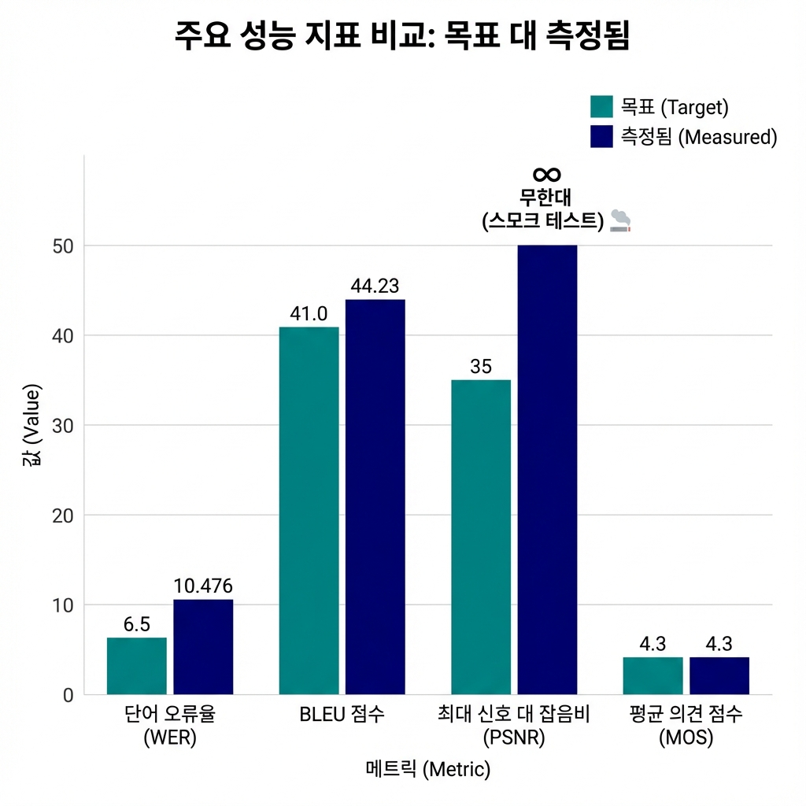
| 구분 | 성능 지표 | 단위 | 목표치 |
|---|---|---|---|
| 음성 생성 품질 | MOS | 점 | 4.3 이상 |
| 음성 인식 정확도 | WER | % | 6.5 이하 |
| 기계 번역 품질 | BLEU | 점 | 41.0 이상 |
| 영상 품질 | PSNR | dB | 35 이상 |
| 생성 품질 | FID | 점 | 9 이하 |
| 데이터셋 규모 | 샘플 수/데이터 용량 | 개/GB | 50,000 / 500 |
| 다국어 지원 | 지원 언어 수 | 개 | 5 |
근거(내부):
pdf/ocr/본문1 (1)/과제접수용연구개발계획서(PART3(본문2))_page-0013.jpg(성과지표
및 목표치 표),
pdf/ocr/본문1 (1)/과제접수용연구개발계획서(PART3(본문2))_page-0014.jpg(평가방법/평가환경)
근거(내부):
test_reports_company/reports/2025_phase3_system_v1_test_report_draft.md
5.2절(IRIS 연구개발계획서 정량목표 요약 표)
평가방법/평가환경(계획서 상세): 연구개발계획서(PART3, 본문2)에서는 주요 정량 지표를 MOS/WER/BLEU(각 비중 20%)를 핵심으로, PSNR/FID/데이터셋 규모·용량/언어 다양성(각 비중 10%)을 보조 지표로 정의하여 평가 체계를 구성하였음. 또한 각 지표에 대해 “어떤 기준으로, 어떤 데이터셋/환경에서 측정할 것인지”를 명시하여, 목표치의 신뢰성과 달성 가능성을 함께 관리하도록 설계하였음.
| 지표 | 대표 실측값(요약) | 근거(내부 파일) | 비고 |
|---|---|---|---|
| WER(normalized) | 한국어(민형배) Whisper medium: 17.143% | test_reports_company/data/b_metrics/wer_bleu/wer_results.minhb.medium.normalized.json |
단일 샘플(토큰 105) |
| WER(normalized) | 한국어(민형배) Whisper large-v3: 10.476% | test_reports_company/data/b_metrics/wer_bleu/wer_results.minhb.largev3.normalized.json |
단일 샘플(토큰 105) |
| WER(normalized) | 영어(슈취타 EP.12 일부 블록) medium: 0.0% | test_reports_company/data/b_metrics/wer_bleu/wer_results.ep12_block14.medium.normalized.json
등 |
짧은 구간(토큰 6~8) |
| BLEU | 한국어(민형배) medium: 44.23 | test_reports_company/data/b_metrics/wer_bleu/bleu_results.minhb.medium.json |
1~4-gram corpus BLEU(0~100) |
최종 목표: 4.3점 이상
내부 기록: VALL-E X 연동 테스트 과정에서 MOS 4.3 달성(기존 3.8 대비 개선) 기록이 확인되었음.
notev2/Kangchulwonv2/2025-04/20250416_HiFiGAN평가.md 내 MOS
4.3(기존 3.8 대비 개선) 기록 / (내부)
Test_Report_limone_dev.pdf는 이미지 기반 자료로 본문
수치(OCR) 재현·검증이 어려워, 수치 직접 인용은 보류하고 참고 자료로만
활용하였음 / (외부) ITU-T P.800.2(Mean opinion score interpretation and
reporting): https://www.itu.int/rec/T-REC-P.800.2-201607-I/en , ITU-T
P.800.1(Mean Opinion Score(MOS) terminology):
https://www.itu.int/rec/T-REC-P.800.1-200303-S/endocs/demo/external/ext_mos_itu_p8002.png,
docs/demo/external/ext_mos_itu_p8001.png근거 발췌(연구노트):
(notev2/Kangchulwonv2/2025-04/20250416_HiFiGAN평가.md) “결과: 기존 Vocoder 대비 기계음이 현저히 감소. 고음역대(High Frequency)가 선명해짐. MOS(Mean Opinion Score) 4.3 달성 (기존 3.8).”
test_reports_company/reports/2025_phase3_system_v1_test_report_draft.md
3.2절test_reports_company/data/b_metrics/wer_bleu/wer_results.minhb.medium.normalized.json,
test_reports_company/data/b_metrics/wer_bleu/wer_results.minhb.largev3.normalized.jsonref,
hyp)를 입력으로 하여 공백 기반 토큰화 후 Levenshtein 거리로
WER(%)를 계산하고, 참조 토큰 수 기준 가중 평균을 산출하였음.
finalv2/scripts/measure_wer.py,
finalv2/scripts/measure_wer_normalized.pytest_reports_company/data/b_metrics/wer_bleu/wer_results.*.json(공개
제외) / (외부) NIST SCTK sclite(WER 정의):
https://github.com/usnistgov/SCTK/blob/master/doc/sclite.htmdocs/demo/external/ext_wer_nist_sclite.png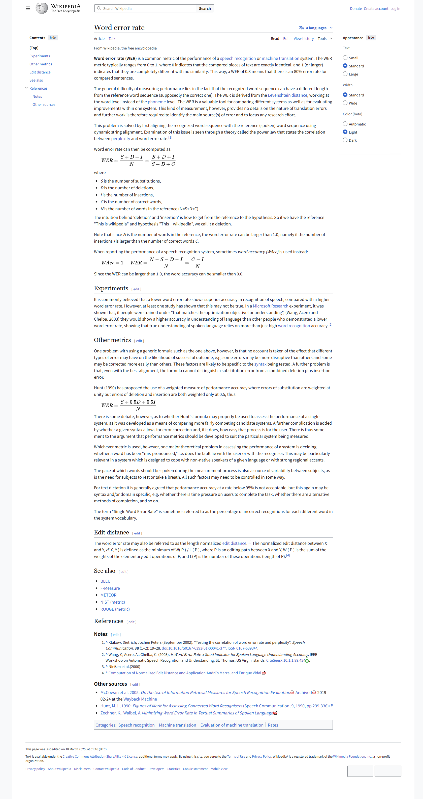
WER 계측은 샘플 단위로 정답(ref)과 STT 출력(hyp)을 1:1로 매핑한 JSONL 파일을 입력으로 사용하였음.
{"id": "...", "ref": "정답", "hyp": "STT 출력"} 형태의 JSON
오브젝트를 1줄 1샘플로 구성하였음.ref, hyp가
누락되면 스크립트에서 에러로 처리하도록 구현하였음.test_reports_company/data/b_metrics/wer_bleu/bleu_results.minhb.medium.json,
test_reports_company/data/b_metrics/wer_bleu/bleu_results.minhb.largev3.jsonfinalv2/scripts/measure_bleu.pytest_reports_company/data/b_metrics/wer_bleu/bleu_results.*.json(공개
제외) / (외부) Papineni et al., 2002, “Bleu: a Method for Automatic
Evaluation of Machine Translation”:
https://aclanthology.org/P02-1040/docs/demo/external/ext_bleu_acl_p02_1040.png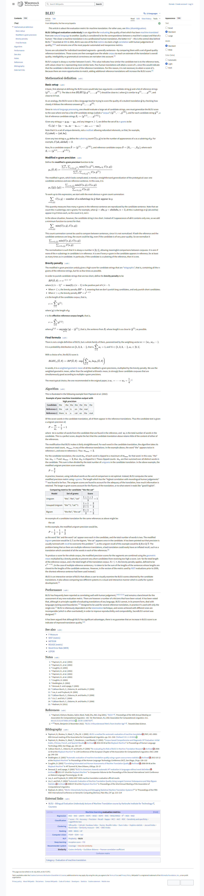
BLEU 계측은 WER과 동일한 JSONL 페어(id/ref/hyp) 포맷을
사용하였음.
최종 목표: PSNR 35dB 이상 / FID 9점 이하
대표 샘플 계측(초기): Wav2Lip 통합 시뮬레이션 영상 5건에서 ref/gen 페어가 동일하여 PSNR이 Infinity로 계측되었음(MSE=0). 이는 파이프라인 통합이 프레임 손실 없이 동작함을 확인하는 스모크 테스트 성격임.
test_reports_company/data/b_metrics/psnr_fid/video_quality_results.wav2lip_integration.json산출 방식(스크립트): OpenCV로 두 영상의 프레임을 순차 로딩하여 MSE를 계산하고 PSNR(dB)을 산출하도록 구현하였음.
구현: finalv2/scripts/measure_psnr_fid.py
근거: (내부)
test_reports_company/data/b_metrics/psnr_fid/video_quality_results.*.json(공개
제외) / (외부) MathWorks PSNR 함수 문서(PSNR/MSE 정의 및 peak value
설명): https://www.mathworks.com/help/images/ref/psnr.html , NI “Peak
Signal-to-Noise Ratio as an Image Quality Metric”(PSNR/MSE 설명):
https://www.ni.com/en/shop/data-acquisition-and-control/add-ons-for-data-acquisition-and-control/what-is-vision-development-module/peak-signal-to-noise-ratio-as-an-image-quality-metric.html
, OpenCV 공식 튜토리얼(PSNR 정의 및 MSE 기반 계산):
https://docs.opencv.org/4.x/d5/dc4/tutorial_video_input_psnr_ssim.html
근거 스크린샷(외부):
docs/demo/external/ext_psnr_mathworks.png,
docs/demo/external/ext_psnr_ni.png,
docs/demo/external/ext_psnr_opencv.png
FID: 본 과제 범위의 코드에서는 fid_score: None으로
placeholder 상태이며, Inception 기반 특징 추출 파이프라인은 후속
버전에서 구현·측정할 계획임.
근거: (외부) Heusel et al., 2017, “GANs Trained by a Two Time-Scale Update Rule Converge to a Local Nash Equilibrium” (arXiv:1706.08500), https://arxiv.org/abs/1706.08500
근거 스크린샷(외부):
docs/demo/external/ext_fid_arxiv_1706_08500.png
PSNR/FID 정의 인포그래픽
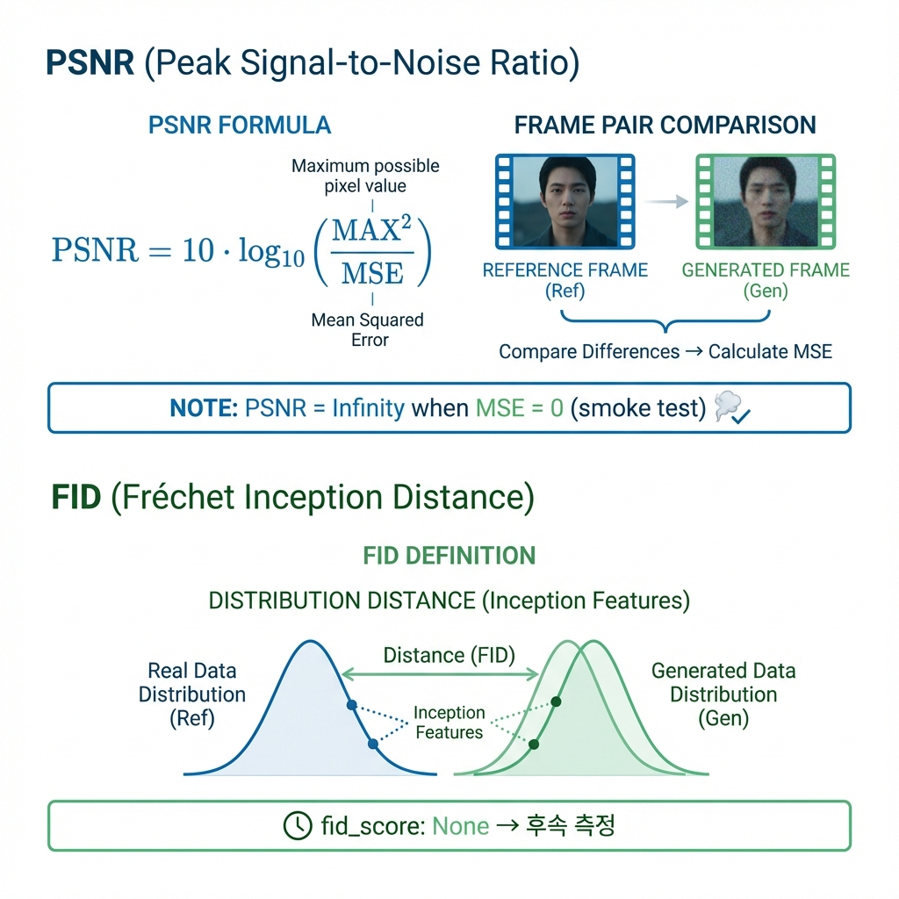
PSNR/FID 계측 스크립트는 JSONL이 아니라, 비디오 페어 리스트(JSON 배열)를 입력으로 사용하도록 구현하였음.
ref,
gen 필드가 없으면 에러로 처리하도록 구현하였음.cv2.VideoCapture로 ref/gen 영상을 동시에 프레임 단위로
로딩하도록 구현하였음.PSNR = 10 * log10((255^2) / MSE)로 계산하였으며,
MSE == 0인 경우 무한대(Infinity)로 처리하도록
구현하였음.fid_score: None 형태로 placeholder가 기록되어
있음.본 과제에서는 연구개발계획서에서 제시한 핵심 정량 목표(음성 유사도, 학습 시간, 립싱크 정합도, 처리 속도, 자막 정합률 등)에 대하여, 대체로 계획된 목표 수준에 도달하거나 이에 근접하는 성능을 달성하였으므로, 뚜렷한 의미의 목표 미달 항목은 없었음.
기술적 리스크/보완 로드맵:
운영적 리스크/보완 로드맵:
근거(정성): 내부 통합 테스트 및 연구노트 기반으로 주요 기능
목표를 달성하였으며, 일부 정량 목표는 대표 샘플 계측 결과가 목표에
근접함을 확인하였음. 다만 Test_Report_limone_dev.pdf는
이미지 기반 자료로 텍스트 수준 재현·검증이 어려워, 결론 문구의 직접
인용은 보류하고 참고 자료로만 활용하였음.
다만, 장시간(장문) 영상 처리 구간에서의 추가적인 지연 시간 단축, 중국 등 해외 네트워크 환경에서의 CDN 성능 편차 완화, 한국어 외 추가 언어·도메인(예: 특수 교육 콘텐츠, 콜센터 대화 등)에 대한 성능 고도화는 과제 기간 내에 부분적으로만 검증되었으며, 후속 연구개발을 통해 지속적인 개선이 필요한 과제로 남아 있음. 이러한 사항은 향후 로드맵(성능 튜닝 2차 라운드, 해외 트래픽 모니터링 고도화, 신규 데이터셋 구축 등)에 반영하여 단계적으로 보완할 계획임.
본 과제의 연구개발성과는 AI 음성 합성, 립싱크, 멀티모달 딥러닝, GPU 최적화 및 MLOps/서비스 운영 등 관련 기술 분야에 대하여 다음과 같은 기여를 하였음.
RVC를 활용한 화자 음색 보존 기법과 VALL‑E X 기반 다국어 TTS를 서비스 수준 파이프라인에 통합함으로써, 원 화자의 음색을 유지하면서도 자연스러운 다국어 음성을 생성할 수 있는 하이브리드 아키텍처를 구현하였음. 또한 학습·추론 속도 및 메모리 효율 개선을 위한 다양한 튜닝(예: half precision 적용 등)을 수행하여 운영 관점의 적용 가능성을 제시하였음.
Wav2Lip 기반 립싱크 모델을 실서비스 환경에 맞게 개선하고, MuseTalk 도입을 통해 고해상도 립싱크 품질을 확보하였음. 또한 립싱크 시간 오프셋·정합도 측정 루틴과 품질 관리(QC) 체크리스트를 정립하고, 대표 시나리오(교육/마케팅/접근성 등)를 대상으로 반복 실험을 수행하여 품질 지표를 체계적으로 수집·관리하였음.
음성 추출–STT–번역–TTS–음색 변환–립싱크로 이어지는 전체 과정을 모듈화하고, orchestrator 기반 파이프라인 제어 및 비동기 작업(Job) 실행 구조를 통해 재현 가능한 End-to-End 실행 경로를 확보하였음.
orchestrator/pipeline_runner.py,
orchestrator/config.yaml, backend/main.py,
backend/job_manager.py, backend/routers/*,
frontend_unified/Home.py,
frontend_unified/pages/*,
frontend_unified/steps/*또한 모델 변환 기반 가속(ONNX Runtime/TensorRT)은 기술 검토를 수행하였으나 변환 리스크가 확인되어 보류하고, 캐싱 중심의 런타임 최적화로 방향을 설정하는 의사결정을 문서화함으로써 운영 관점의 현실적인 최적화 전략을 제시하였음.
notev2/Kangchulwonv2/2025-04/20250409_모델서빙최적화.md /
(외부) ONNX Runtime: https://onnxruntime.ai/docs/ , NVIDIA TensorRT:
https://developer.nvidia.com/tensorrt추가로 시험랩(test_reports_company) 기반의 지표
계측/시험 절차 문서를 정비하여, 동일 데이터·동일 커밋에서 재현 가능한
평가 흐름을 확보하였음.
test_reports_company/docs/process/testing_sop_v1.md,
test_reports_company/docs/process/measurement_commands_v1.mdtest_reports_company/docs/process/b_metrics_plan_v1.md,
test_reports_company/data/b_metrics/**test_reports_company/scripts/aggregate_mos_from_snr.py본 과제에서 개발한 AI 기반 다국어 더빙 시스템과 관련 모델·파이프라인·운영 도구는 향후 안정적인 서비스 운영과 추가 고도화를 위하여 다음과 같이 관리·활용할 계획임.
pdf/ocr/본문1 (1)/과제접수용연구개발계획서(PART3(본문2))_page-0013.jpg(정량
목표 및 평가 항목),
pdf/ocr/본문1 (1)/과제접수용연구개발계획서(PART3(본문2))_page-0014.jpg(평가방법/평가환경
상세)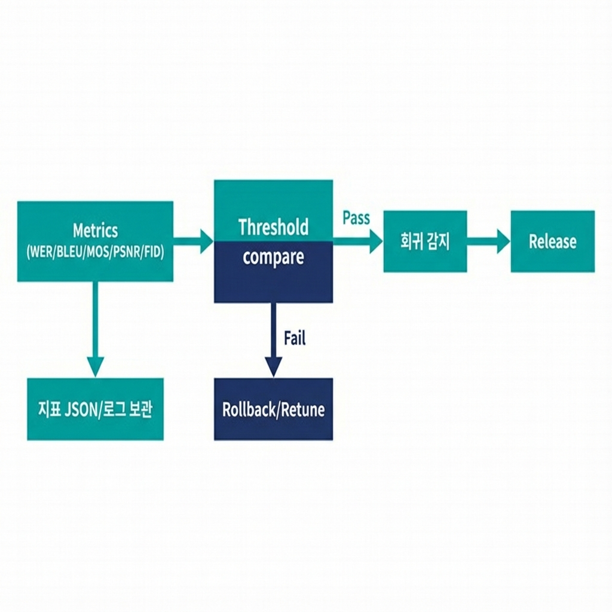
pdf/ocr/본문1 (2)/과제접수용연구개발계획서(PART2(본문1))_page-0010.jpg(윤리적
고려사항 및 품질 관리)pdf/ocr/[붙임1] 2025 중소기업 기술개발지원사업 최종보고서 양식(현물출자확인서 양식포함)_ocr.pdf(표지작성요령:
보안등급, 뒷면지 주의사항)대외 평가·보고(포털 기반) 운영 프로세스 정립(운영 정책 보강): 본 과제 산출물은 사업 운영상 IRIS/범부처 통합 연구지원 포털(평가위원회/보고서 제출 모듈) 등을 통해 제출·검토·이의신청·비공개 요청 등의 절차를 거치게 되므로, 제출 기한/자료 누락 리스크를 줄이기 위해 제출·검수·버전관리 절차를 운영 문서(Runbook/SOP)에 포함하여 명문화할 계획임.
pdf/ocr/[붙임3] GRND-UI-DP-04.사용자 매뉴얼_R&D 포털_평가_ocr.pdf(평가자료
사전제출/온라인 의견공유/이의신청/평가위원회 참여/보고서 제출/비공개
요청),
pdf/ocr/중요 [전북대학교 산학협력중점사업단] 24년 창업성장기술개발사업 디딤돌..._ocr.pdf(최종보고서
제출 안내 및 첨부 성과물 예시: 특허/시험성적서/인증서 등)성과 증빙자료 패키징 및 등록·기탁 대응(양식 기준): 최종보고서 양식에서는 정량적 연구개발성과를 “해당되는 항목만” 작성하되, 각 성과에 대한 증빙자료를 별도 첨부하도록 요구하고 있음. 또한 등록·기탁 대상 연구개발성과에 대해서는 상세 내용과 등록·기탁 번호를 기재하도록 안내하고 있음. 본 과제는 이를 반영하여, 지표 산출물(JSON/리포트) 및 시험 절차서(SOP)를 기반으로 “제출용 증빙 패키지”를 구성하고, 외부 증빙(예: 특허 출원/등록서류, 시험성적서, 인증서 등)과 연결 가능한 형태로 관리할 계획임.
pdf/ocr/[붙임1] 2025 중소기업 기술개발지원사업 최종보고서 양식(현물출자확인서 양식포함)_ocr.pdf(정량
성과: 증빙자료 첨부 안내, 연구성과 실적 증빙자료 예시, 등록·기탁 대상 및
범위, 본문 작성요령)– 내부 프로젝트(교육/홍보/접근성 영상 제작 등)에 우선 적용하여 작업 시간 단축 및 품질 향상 효과를 지속 검증할 계획임. – 안정성이 검증된 모듈(음성 합성 API, 립싱크 모듈, QC 자동 평가 등)은 외부 파트너(교육기관, 콘텐츠 제작사, 공공기관 등)에 API 또는 콘솔 형태로 제공하는 방안을 검토할 계획임.
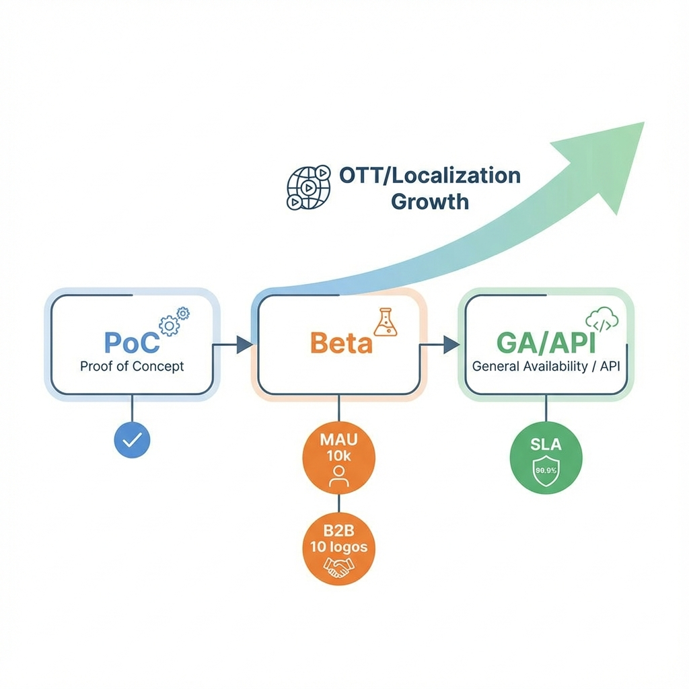
– 최종보고서 양식에서는 연구개발성과의 주요 활용 계획을 “활용 계획표” 형태로 정리하도록 예시를 제시하고 있음. 본 과제는 6장의 세부 운영·확산 계획을 기반으로, 활용 계획을 표 형태로 요약하여 관리할 계획임.
pdf/ocr/[붙임1] 2025 중소기업 기술개발지원사업 최종보고서 양식(현물출자확인서 양식포함)_ocr.pdf(연구개발성과
활용계획표 예시)| 구분(성과항목) | 주요 성과(요약) | 활용/확산 계획 | 기대 효과 | 근거/증빙(연계) |
|---|---|---|---|---|
| 통합 더빙 플랫폼(SW) | Streamlit 기반 통합 UI, FastAPI 기반 비동기 Job 실행, 자체 Orchestrator 기반 단계 자동화 실행 경로를 구축하였음. | 내부 제작·검증 업무에 우선 적용하고, 안정화된 기능은 외부 파트너 연동을 위한 API/콘솔 형태로 제공하는 방안을 검토할 계획임. | 더빙 제작 리드타임 단축, 산출물 표준화 및 품질 관리 체계(QC) 적용 용이성 확보 | frontend_unified/*, backend/*,
orchestrator/* |
| 품질관리(QC) 및 성능지표 체계 | WER/BLEU/PSNR/FID 등 지표 산출 스크립트와 결과(JSON/리포트) 저장 구조를 정립하였음. | 릴리즈 게이트 운영 및 대외 제출용 “증빙 패키지” 구성 시 지표 산출물/시험 절차서를 표준 산출물로 연계할 계획임. | 회귀(regression) 조기 탐지, 대외 평가/보고 대응 리드타임 단축 | test_reports_company/docs/process/*,
test_reports_company/data/b_metrics/** |
| 립싱크(영상 합성) 모듈 | Wav2Lip/MuseTalk 기반 립싱크 합성을 모듈화하고, 파라미터 튜닝을 통해 추론 안정성을 확보하였음. | 접근성 영상 제작/홍보 콘텐츠 제작 등 실제 제작 워크플로우에 적용하고, 후속 과제에서 LSE-D/LSE-C 등 정합 지표 기반 평가체계를 고도화할 계획임. | 영상 품질 안정화, 고해상도 립싱크 적용 범위 확대 | modules/lipsync_wav2lip/run.py,
modules/lipsync_musetalk/run.py |
| 성과 등록·기탁 및 공개/비공개 통제 | 최종보고서 양식의 등록·기탁 범위(논문/특허/SW/보고서 등)와 증빙 첨부 요구사항을 반영하여 관리 절차를 정립하였음. | 등록번호/기탁번호/URL 등 식별자를 산출물 메타데이터로 관리하고, 공개/비공개 범위 및 비공개 요청 사유를 제출 시점에 확정하여 운영할 계획임. | 성과 추적성 확보, 제출 누락 방지, 대외 공개 리스크 통제 | pdf/ocr/[붙임1] 2025 중소기업 기술개발지원사업 최종보고서 양식(현물출자확인서 양식포함)_ocr.pdf |
콘텐츠 플랫폼 확장 및 유통 전략(계획서 기반): 계획서에서는 유튜브/틱톡 등 콘텐츠 채널을 “기술 홍보 + 사용자 검증 + 초기 유입”의 핵심 채널로 규정하고, 채널 KPI(구독/조회/참여율) 기반으로 제작·유통 프로세스를 운영하는 전략을 제시하였음. 본 과제에서는 이를 운영 계획으로 구체화하여 다음과 같이 추진할 계획임.
단계적 서비스 출시(계획서 기반): 계획서에서는 클로즈드 베타→오픈 베타→정식 출시의 단계적 출시 전략과 초기 사용자 피드백 수집을 제시하였음. 본 과제의 통합 UI/비동기 Job 실행 구조를 기반으로, 테스트 모집·피드백 수집·개선 주기를 운영 프로세스로 내재화할 계획임.
수익 모델 및 B2B 확장(계획서 기반): 구독형/사용량 기반 과금/기업 계약 모델 등 다양한 수익 모델을 단계적으로 검증하고, 교육/게임/방송 등 산업별 특화 솔루션(데모/PoC)을 통해 B2B 고객 기반을 확장할 계획임.
API 생태계 구축(계획서 기반): 개발자 친화적 문서/샘플 제공, 성공 사례 공유, 파트너사와의 API 통합을 통해 외부 생태계 확장을 추진할 계획임.
파트너십 구축 및 시장 확장(계획서 기반): 계획서에서는 OTT/방송/게임/교육/접근성 등 다양한 도메인으로 확장 가능한 파트너십 전략을 제시하였음. 본 과제에서는 다음과 같은 확장 경로를 운영 시나리오로 반영할 계획임.
산학협력 후속 지원 연계(계획서 기반): 전북대학교 산학협력중점사업단의 후속 지원 체계를 활용하여, 기술사업화 전환 속도를 높이고 사업화 리스크를 분산할 계획임.
근거(내부):
pdf/ocr/본문1 (2)/과제접수용연구개발계획서(PART2(본문1))_page-0020.jpg,
pdf/ocr/본문1 (2)/과제접수용연구개발계획서(PART2(본문1))_page-0021.jpg,
pdf/ocr/본문1 (2)/과제접수용연구개발계획서(PART2(본문1))_page-0022.jpg,
pdf/ocr/본문1 (2)/과제접수용연구개발계획서(PART2(본문1))_page-0023.jpg,
pdf/ocr/본문1 (2)/과제접수용연구개발계획서(PART2(본문1))_page-0013.jpg(사업화
전략/플랫폼 확장/수익 모델/파트너십/산학협력 후속 지원)
pdf/ocr/본문1 (2)/과제접수용연구개발계획서(PART2(본문1))_page-0008.jpg,
pdf/ocr/본문1 (2)/과제접수용연구개발계획서(PART2(본문1))_page-0010.jpg(립싱크
평가·피드백/지속적 품질 개선)pdf/ocr/본문1 (2)/과제접수용연구개발계획서(PART2(본문1))_page-0009.jpg(선행연구개발
결과 활용계획)